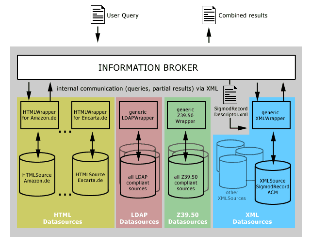
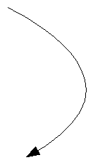

<!DOCTYPE HTML PUBLIC "-//W3C//DTD HTML 3.2//EN">
<HTML>
<HEAD>
	<META HTTP-EQUIV="CONTENT-TYPE" CONTENT="text/html; charset=windows-1252">
	<TITLE></TITLE>
	<META NAME="GENERATOR" CONTENT="StarOffice 6.0  (Win32)">
	<META NAME="CREATED" CONTENT="20020324;20101300">
	<META NAME="CHANGED" CONTENT="20020407;15290385">
</HEAD>
<BODY LANG="en-US" TEXT="#000000" LINK="#0000ff" VLINK="#800080">
<DIV TYPE=HEADER>
	<TABLE WIDTH=100% BORDER=0 CELLPADDING=4 CELLSPACING=0>
		<COL WIDTH=7*>
		<COL WIDTH=114*>
		<COL WIDTH=5*>
		<COL WIDTH=130*>
		<THEAD>
			<TR VALIGN=TOP>
				<TD WIDTH=3%>
					<P LANG="de-DE"><BR>
				</TD>
				<TD WIDTH=45%>
					<DL>
						<DT><P LANG="de-DE"><FONT FACE="Tahoma"><FONT SIZE=2>Fakult&auml;t
						f&uuml;r Informatik<BR>Wilhelm-Schickard-Institut<BR><B>Arbeitsbereich</B></FONT></FONT><DT><P LANG="de-DE">
						&bdquo;<FONT FACE="Tahoma"><FONT SIZE=2><B>Datenbanken
						undInformationssysteme&ldquo; </B><BR>Lehrstuhl Prof. Dr.
						Ulrich G&uuml;ntzer</FONT></FONT></DL>
				</TD>
				<TD WIDTH=2%>
					<P LANG="de-DE"><BR>
				</TD>
				<TD WIDTH=51%>
					
					<BR CLEAR=LEFT>
					<DL>
						<DD><P LANG="de-DE" ALIGN=RIGHT><BR>
					</DL>
				</TD>
			</TR>
		</THEAD>
	</TABLE>
	<P LANG="de-DE"><BR>
</DIV>
<P LANG="de-DE" ALIGN=CENTER><BR><BR>
</P>
<P LANG="de-DE" ALIGN=CENTER><BR><BR>
</P>
<P LANG="de-DE" ALIGN=CENTER><BR><BR>
</P>
<P LANG="de-DE" ALIGN=CENTER><BR><BR>
</P>
<P LANG="de-DE" ALIGN=CENTER><BR><BR>
</P>
<DL>
	<DD><P LANG="de-DE" ALIGN=CENTER><BR><BR>
	</P>
</DL>
<P LANG="de-DE" ALIGN=CENTER><BR><BR>
</P>
<P LANG="de-DE" ALIGN=CENTER><FONT FACE="Tahoma"><FONT SIZE=4><B>Studienarbeit</B></FONT></FONT></P>
<P LANG="de-DE" ALIGN=CENTER><FONT FACE="Tahoma"><FONT SIZE=4><B>Entwurf
und Implementierung eines konfigurierbaren Wrappers f&uuml;r
XML-basierte Informationsquellen</B></FONT></FONT></P>
<P LANG="de-DE" ALIGN=CENTER><FONT FACE="Tahoma"><FONT SIZE=4><B>Ausarbeitung
von<BR>Robert S&ouml;semann, 04.04.2002</B></FONT></FONT></P>
<P LANG="de-DE" ALIGN=CENTER><BR><BR>
</P>
<P LANG="de-DE" ALIGN=CENTER><BR><BR>
</P>
<P LANG="de-DE" ALIGN=CENTER><BR><BR>
</P>
<P LANG="de-DE" ALIGN=CENTER><BR><BR>
</P>
<P LANG="de-DE" ALIGN=CENTER><BR><BR>
</P>
<P LANG="de-DE" ALIGN=CENTER><BR><BR>
</P>
<DL>
	<DD><P LANG="de-DE" ALIGN=CENTER><BR><BR>
	</P>
	<DD><P LANG="de-DE"><FONT FACE="Tahoma"><FONT SIZE=2>Betreuer: Dipl.
	Inform. Andreas Ludwig</FONT></FONT></P>
	<DD><P LANG="de-DE"><BR><BR>
	</P>
	<DT><P LANG="de-DE"><BR>
	<DT><P LANG="de-DE"><BR>
</DL>
<P LANG="de-DE" ALIGN=CENTER><BR>
<DL>
	<DT><P LANG="de-DE"><BR>
</DL>
<P LANG="de-DE"><FONT FACE="Tahoma"><FONT SIZE=4><B>Inhaltsverzeichnis<BR></B></FONT></FONT><BR><BR>
</P>
<DIV ID="Inhaltsverzeichnis1">
	<DL>
		<DL>
			<DL>
				<DD><P LANG="de-DE"><FONT FACE="Tahoma"><FONT SIZE=3><B>I 
				Abstract	5</B></FONT></FONT><DD><P LANG="de-DE">
				<FONT FACE="Tahoma"><FONT SIZE=3><B>II   Einleitung/Motivation	5</B></FONT></FONT><DL>
					<DL>
						<DD><P LANG="de-DE">
						<FONT FACE="Tahoma"><FONT SIZE=3><B>1 Klassische Suchdienste	5</B></FONT></FONT><DD><P LANG="de-DE">
						<FONT FACE="Tahoma"><FONT SIZE=3><B>2 Neue Herausforderungen	6</B></FONT></FONT><DD><P LANG="de-DE">
						<FONT FACE="Tahoma"><FONT SIZE=3><B>3 Hintergrund: Projekt
						INFORMATION BROKER	7</B></FONT></FONT><DD><P LANG="de-DE">
						<FONT FACE="Tahoma"><FONT SIZE=3><B>4 Aufgabenstellung	9</B></FONT></FONT></DL>
				</DL>
				<DD><P LANG="de-DE">
				<FONT FACE="Tahoma"><FONT SIZE=3><B>III  Entwurf der
				Konfigurationsdatei	10</B></FONT></FONT><DL>
					<DL>
						<DD><P LANG="de-DE">
						<FONT FACE="Tahoma"><FONT SIZE=3><B>1 Durchg&auml;ngige
						Informationseinheit	11</B></FONT></FONT><DD><P LANG="de-DE">
						<FONT FACE="Tahoma"><FONT SIZE=3><B>2 Mapping der Feldnamen	11</B></FONT></FONT><DD><P LANG="de-DE">
						<FONT FACE="Tahoma"><FONT SIZE=3><B>3 Behebung von
						Strukturproblemen	11</B></FONT></FONT></DL>
				</DL>
				<DD><P LANG="de-DE">
				<FONT FACE="Tahoma"><FONT SIZE=3><B>IV  XSLT oder XQuery als
				Anfragesprache?	11</B></FONT></FONT><DL>
					<DL>
						<DD><P LANG="de-DE">
						<FONT FACE="Tahoma"><FONT SIZE=3><B>1 Grundlage: Common Query
						Format	11</B></FONT></FONT><DL>
							<DD><P LANG="de-DE">
							<FONT FACE="Tahoma"><FONT SIZE=2>1.1 Standardisiertes
							Termformat	11</FONT></FONT><DD><P LANG="de-DE">
							<FONT FACE="Tahoma"><FONT SIZE=2>1.2 Geschachtelte boolesche
							Ausdr&uuml;cke	13</FONT></FONT><DD><P LANG="de-DE">
							<FONT FACE="Tahoma"><FONT SIZE=2>1.3 Weitere Features	13</FONT></FONT><DD><P LANG="de-DE">
							<FONT FACE="Tahoma"><FONT SIZE=2>1.4 DTD einer Common Query	13</FONT></FONT><DD><P LANG="de-DE">
							<FONT FACE="Tahoma"><FONT SIZE=2>1.5 Query Beispiele	15</FONT></FONT></DL>
						<DD><P LANG="de-DE">
						<FONT FACE="Tahoma"><FONT SIZE=3><B>2 Was ist XSLT	16</B></FONT></FONT><DL>
							<DD><P LANG="de-DE">
							<FONT FACE="Tahoma"><FONT SIZE=2>2.1 Pfadanweisungen mit
							XPath	19</FONT></FONT><DD><P LANG="de-DE">
							<FONT FACE="Tahoma"><FONT SIZE=2>2.2 Bedingte Ausf&uuml;hrung
							und Funktionen	20</FONT></FONT></DL>
						<DD><P LANG="de-DE">
						<FONT FACE="Tahoma"><FONT SIZE=3><B>3 Was ist XQuery	20</B></FONT></FONT><DD><P LANG="de-DE">
						<FONT FACE="Tahoma"><FONT SIZE=3><B>4 Entscheidung f&uuml;r
						XSLT	23</B></FONT></FONT><DD><P LANG="de-DE">
						<FONT FACE="Tahoma"><FONT SIZE=3><B>5 Umsetzung von Common
						Queries in XSLT	24</B></FONT></FONT></DL>
				</DL>
				<DD><P LANG="de-DE">
				<FONT FACE="Tahoma"><FONT SIZE=3><B>V  Implementierung und
				Funktionsweise	25</B></FONT></FONT><DL>
					<DL>
						<DD><P LANG="de-DE">
						<FONT FACE="Tahoma"><FONT SIZE=3><B>1 XMLWrapper.java	25</B></FONT></FONT><DD><P LANG="de-DE">
						<FONT FACE="Tahoma"><FONT SIZE=3><B>2
						XMLWrapperException.java	25</B></FONT></FONT><DD><P LANG="de-DE">
						<FONT FACE="Tahoma"><FONT SIZE=3><B>3
						XMLSourceDescriptor.java	25</B></FONT></FONT><DD><P LANG="de-DE">
						<FONT FACE="Tahoma"><FONT SIZE=3><B>4 Property.java	25</B></FONT></FONT><DD><P LANG="de-DE">
						<FONT FACE="Tahoma"><FONT SIZE=3><B>5 CommonQuery.java	25</B></FONT></FONT><DD><P LANG="de-DE">
						<FONT FACE="Tahoma"><FONT SIZE=3><B>6 Term.java	25</B></FONT></FONT><DD><P LANG="de-DE">
						<FONT FACE="Tahoma"><FONT SIZE=3><B>7 Boolean.java	25</B></FONT></FONT><DD><P LANG="de-DE">
						<FONT FACE="Tahoma"><FONT SIZE=3><B>8 QueryMapper.java 	25</B></FONT></FONT><DD><P LANG="de-DE">
						<FONT FACE="Tahoma"><FONT SIZE=3><B>9
						XMLSourceFlattener.java	25</B></FONT></FONT><DD><P LANG="de-DE">
						<FONT FACE="Tahoma"><FONT SIZE=3><B>10 XSLTQuery.java	25</B></FONT></FONT><DD><P LANG="de-DE">
						<FONT FACE="Tahoma"><FONT SIZE=3><B>11 Funktionsweise &ndash;
						eine Ablaufszenario	25</B></FONT></FONT></DL>
				</DL>
				<DD><P LANG="de-DE">
				<FONT FACE="Tahoma"><FONT SIZE=3><B>VI  Erweiterungsm&ouml;glickeiten
				und Ausblick	25</B></FONT></FONT><DD><P LANG="de-DE">
				<FONT FACE="Tahoma"><FONT SIZE=3><B>VII 
				Literaturverzeichnis/Ressourcen	25</B></FONT></FONT></DL>
		</DL>
	</DL>
</DIV>
<H1 LANG="de-DE" ALIGN=JUSTIFY><FONT FACE="Tahoma"><FONT SIZE=3>I  <FONT SIZE=3>Ab</FONT>stract</FONT></FONT></H1>
<DL>
	<DT><P LANG="de-DE"><FONT FACE="Tahoma"><FONT SIZE=2>Folgendes
	Dokument ist die schriftliche Ausarbeitung einer Studienarbeit mit
	dem Thema <FONT FACE="MS Reference Sans Serif, Tahoma"><I>&bdquo;Entwurf
	und Implementierung eines konfigurierbaren Wrappers f&uuml;r
	XML-basierte Informationsquellen&ldquo;</I>.<BR>Sie wurde im April
	2002 von Robert S&ouml;semann (</FONT><A HREF="mailto:robert.soesemann@uni-tuebingen.de"><FONT FACE="MS Reference Sans Serif, Tahoma">robert.soesemann@uni-tuebingen.de</FONT></A><FONT FACE="MS Reference Sans Serif, Tahoma">)
	erstellt und von Dipl. Inform. Andreas Ludwig am Arbeitsbereich
	&bdquo;Datenbanken und Informationsysteme&ldquo; der Fakult&auml;t
	f&uuml;r Informatik der Universit&auml;t T&uuml;bingen betreut.</FONT></FONT></FONT><DT><P LANG="de-DE">
	<FONT FACE="MS Reference Sans Serif, Tahoma"><FONT SIZE=2>Die
	Ausarbeitung soll eine Motivation f&uuml;r die Themenstellung geben,
	Grundverst&auml;ndnis f&uuml;r die verwendete Techniken vermitteln,
	Entwurfsentscheidungen dokumentieren und die konkrete
	Implementierung beschreiben.</FONT></FONT><DT><P LANG="de-DE">
	<FONT FACE="MS Reference Sans Serif, Tahoma"><FONT SIZE=2>Die
	XMLWrapperapplikation, der Java Sourcecode, Beispielmaterial zu
	Testen und eine elektronische Version dieses Dokuments k&ouml;nnen
	unter der Adresse <A HREF="http://www.webspace-journey.de/openproject">http://www.webspace-journey.de/openproject</A>
	heruntergeladen werden.</FONT></FONT></DL>
<H1 LANG="de-DE" ALIGN=JUSTIFY>
<FONT FACE="Tahoma"><FONT SIZE=3>II   Einleitung/Motivation</FONT></FONT></H1>
<H2 LANG="de-DE"><FONT FACE="Tahoma"><FONT SIZE=3>1 Klassische
Suchdienste</FONT></FONT></H2>
<DL>
	<DT><P LANG="de-DE"><FONT FACE="Tahoma"><FONT SIZE=2>Internetsuchmaschinen
	sind nicht der Weisheit letzter Schluss. So oder &auml;hnlich k&ouml;nnte
	ein Allgemeinplatz &uuml;ber die Qualit&auml;t der Suchergebnisse
	bei der Recherche im World Wide Web lauten. Bei den zwei momentan
	vorherrschenden Suchparadigmen &ndash; Suchrobotern und
	Verzeichnissen - handelt es sich um zwei unterschiedliche
	Entscheidungen der Abw&auml;gung zwischen Trefferqualit&auml;t und
	Trefferanzahl. </FONT></FONT>
	<DT><P LANG="de-DE"><BR>
	<DT><P LANG="de-DE"><FONT FACE="Tahoma"><FONT SIZE=2>Ein klassischen
	Suchroboter &aacute; la Altavista oder Lycos, ist ein St&uuml;ck
	Software, die mehr oder minder systematisch von einem
	Ausgangspunkt(=einer Webseite) jedem Hyperlink folgt, den Text der
	passierten Seiten indiziert und so nach Abermillionen Schritten eine
	grossen Teil aller Webseiten des Internets besucht und in einer
	eigenen Datenbank gelisted hat. </FONT></FONT>
	<DT><P LANG="de-DE"><FONT FACE="Tahoma"><FONT SIZE=2>Da dieser
	Vorgang sehr schnell und fast ohne menschliches Zutun abl&auml;uft,
	erfassen solche automatischen Suchroboter einen grossen Teil des
	erreichbaren World Wide Webs. Dieses &bdquo;Crawlen&ldquo;, wie das
	systematische Abarbeiten oft genannt wird, kann regelm&auml;&szlig;ig
	wiederholt werden. Daher ist das Abbild der Realit&auml;t in den
	Datenbanken der Suchmaschinen recht aktuell.</FONT></FONT><DT><P LANG="de-DE">
	<BR>
	<DT><P LANG="de-DE"><FONT FACE="Tahoma"><FONT SIZE=2>W&auml;hrend
	also die Schnelligkeit und Automatisierung einer der grossen
	Vorteile von Suchroboter ist, sind die Suchtreffer oft qualitativ
	mangelhaft.</FONT></FONT><DT><P LANG="de-DE">
	<FONT FACE="Tahoma"><FONT SIZE=2>F&uuml;r eine Suche als relevant
	eingestuft wird eine gelistete Webseite dann, wenn die angefragten
	Suchbegriffe mit bestimmter relativer oder absoluter H&auml;ufigkeit
	oder an bestimmten Stellen in ihrem Text vorkommen. Auch wenn es
	naheliegt, dass in einem Text &uuml;ber Algorithmen, oft das Wort
	&bdquo;Algorithmen&ldquo; vorkommt, ist eine Verallgemeinerung
	dieser These sicherlich falsch. </FONT></FONT>
	<DT><P LANG="de-DE"><BR>
	<DT><P LANG="de-DE"><FONT FACE="Tahoma"><FONT SIZE=2>Genau das tun
	Suchroboter aber. Gibt der Benutzer beispielsweise als Suchbegriffe
	<I>'Donald E. Knuth' </I>und <I>'Algorithm'</I> ein, weil er mehr
	&uuml;ber das bekannte Algorithmenbuch des Autors Knuth erfahren
	will, werden Seiten gesucht, in denen m&ouml;glichst h&auml;ufig und
	nah beieinander beide Begriffe vorkommen. Genau da liegt ein
	Problem. Dass in den erwarteten Seiten mit einer  Buchkritik
	/-beschreibung die beiden Worte sicher seltener vorkommen (oft nur
	genau einmal im Titel), als in Literaturlisten im Web publizierter
	wissenschaftlicher Arbeiten zum Thema Algorithmen ist fast
	garantiert. </FONT></FONT>
	<DT><P LANG="de-DE"><FONT FACE="Tahoma"><FONT SIZE=2>Was dem
	Suchroboter also fehlt ist die Kenntnis der Semantik der
	Suchbegriffe, die ihn beim Auftreten der beiden eben genannten
	Begriffe erkennen lie&szlig;e, das <I>'Knuth'</I> oft als Autor
	gesucht wird und in den Titeln seiner B&uuml;cher oft das Wort
	<I>'Algorithms'</I> vorkommt.</FONT></FONT><DT><P LANG="de-DE">
	<BR>
	<DT><P LANG="de-DE"><FONT FACE="Tahoma"><FONT SIZE=2>Genau diesem
	Mangel, also der fehlenden Kenntniss des echten Inhalts einer
	Webseite oder bestimmter Suchbegriffskombinationen, begegnen
	Webverzeichnisse (z.b. Yahoo, Web.de).</FONT></FONT><DT><P LANG="de-DE">
	<FONT FACE="Tahoma"><FONT SIZE=2>Wie in einem Branchenbuch gibt es
	dort eine Hierarchie von Rubriken und Unterrubriken, in die dann
	alle gefunden Seiten thematisch eingeordnet werden.</FONT></FONT><DT><P LANG="de-DE">
	<BR>
	<DT><P LANG="de-DE"><FONT FACE="Tahoma"><FONT SIZE=2>So kommen
	bespielsweise Seiten die Algorithmenb&uuml;cher von Donal E. Knuth
	beschreiben, in die Rubrik:</FONT></FONT><DT><P LANG="de-DE">
	<FONT FACE="Courier New"><FONT SIZE=2><B>	literatur:b&uuml;cher:sachb&uuml;cher:computer:programmierung:algorithmen</B></FONT></FONT><DT><P LANG="de-DE">
	<FONT FACE="Tahoma"><FONT SIZE=2>Wissenschaftliche Publikationen zum
	Thema Algorithmen, die sich auf Literatur von Knuth st&uuml;tzen,
	w&auml;ren dagegen eher unter dieser Rubrik zu finden:</FONT></FONT><DT><P LANG="de-DE">
	<FONT FACE="Courier New"><FONT SIZE=2><B>	wissenschaft:informatik:publikationen:algorithmen</B></FONT></FONT><DT><P LANG="de-DE">
	<FONT FACE="Tahoma"><FONT SIZE=2>Da Seiten nicht immer eindeutig in
	eine einzige Rubrik eingeordnet werden k&ouml;nnen, werden oft
	mehrere Zuordnungen vergeben. Diese Einordnung wird fast
	ausschliesslich von Menschen in den Redaktionen der Suchdienste oder
	den Personen die Ihre Webseite anmelden vorgenommen, und st&auml;ndig
	manuell korrigiert. </FONT></FONT>
	<DT><P LANG="de-DE"><FONT FACE="Tahoma"><FONT SIZE=2>Bei
	Sch&auml;tzungen, die davon ausgehen, das die Anzahl der Webseiten
	im WWW sich pro Monat  verdoppelt, erscheint eine erfolgreiche und
	effiziente Fortf&uuml;hrung dieses Suchmodells eher fragw&uuml;rdig.</FONT></FONT><DT><P LANG="de-DE">
	<BR>
</DL>
<H2 LANG="de-DE"><FONT FACE="Tahoma"><FONT SIZE=3>2 Neue
Herausforderungen</FONT></FONT></H2>
<DL>
	<DT><P LANG="de-DE"><FONT FACE="Tahoma"><FONT SIZE=2>Das World Wide
	Web befindet sich in einer Trendwende, die vorallem duch dynamische
	Websprachen wie PHP, JSP, ASP und das hierarchiche Datenformat XML
	bedingt wurden. Diese neuen Techniken schr&auml;nken, die eben
	erw&auml;hnten Suchmethoden allerdings noch weiter ein, da jene
	Webseiten nur dann erfassen oder einordnen k&ouml;nnen, wenn diese
	auch tats&auml;chlich vorhanden sind &ndash; also von Maschinen
	gefunden werden k&ouml;nnen.</FONT></FONT><DT><P LANG="de-DE">
	<BR>
	<DT><P LANG="de-DE"><FONT FACE="Tahoma"><FONT SIZE=2>Aus Gr&uuml;nden
	der Wiederverwendbarkeit, Aktualisierbarkeit und
	Personalisierbarkeit von Inhalten werden aber immer mehr Seiten erst
	zur Zeit der Nutzeranfrage dynamisch erstellt und auf die W&uuml;nsche
	des Abfragers angepasst geliefert.</FONT></FONT><DT><P LANG="de-DE">
	<FONT FACE="Tahoma"><FONT SIZE=2>Ein typische Szenario ist z.B.: Ein
	Nutzer sucht beim Online-Buchshop Amazon ein Buch mit bestimmten
	Eigenschaften. Er gibt dort in HTML-Formularfeldern seine W&uuml;nsche
	ein. </FONT></FONT>
	<DT><P LANG="de-DE"><FONT FACE="Tahoma"><FONT SIZE=2>Aus den
	passenden Rohdaten aus einer Datenbank und Gestaltungsschablonen
	(z.B. in PHP, JSP, ASP) wird von Serverkomponenten (z.B Java
	Servlets) die eigentliche HTML Seite &bdquo;on-the-fly&ldquo;
	zusammengebaut und an den Browser des Anfrager geschickt. </FONT></FONT>
	<DT><P LANG="de-DE"><BR>
	<DT><P LANG="de-DE"><FONT FACE="Tahoma"><FONT SIZE=2>Eine
	Suchmaschine kann diese Seite nicht mehr indizieren, da sie nie
	wirklich als Datei auf dem Server existiert. Selbst die darin
	enthaltene Information ist nicht mehr f&uuml;r sie zug&auml;nglich,
	da die Rohdaten in geschlossenen Datenbanken (z.B. DB2, Oracle)
	gespeichert sind und nicht in dem Format, dass klassiche
	Suchmaschinen verstehen &ndash; HTML.</FONT></FONT><DT><P LANG="de-DE">
	<FONT FACE="Tahoma"><FONT SIZE=2>Ein mittlerweile grosser Teil des
	Webs, der deswegen f&uuml;r Suchmaschinen unsichtbar ist, wird daher
	auch oft &bdquo;Hidden Web&ldquo; genannt.</FONT></FONT><DT><P LANG="de-DE">
	<BR>
	<DT><P LANG="de-DE"><FONT FACE="Tahoma"><FONT SIZE=2>Trotz der
	eigentlich sinnvollen Trennung von Rohdaten und ihrer konkreten
	Darstellung, ergibt sich ein  Problem. Als der Grossteil der Daten
	im WWW noch aus statische HTML-Seiten bestand, gab es ein
	einheitliches Format. Suchmaschinen konnten sich sich darauf
	einstellen, m&ouml;glichst gut die Inhalte solcher Dateien zu
	durchsuchen. Obwohl auch heute noch HTML, das Format f&uuml;r die
	Verbreitung von Informationen im Web ist, sind es heute nur noch die
	Rohdaten, die als physich vorhanden, auch durchsucht werden k&ouml;nnten.
	Die zugrunde liegenden Datenbanken basieren jedoch oft noch auf
	nicht standardisierten, propriet&auml;ren Format, auf die ein
	effizienter Zugriff von aussen fast unm&ouml;glich ist. W&auml;ren
	diese in einem einheitlichen Standardformat, k&ouml;nnten
	Suchroboter diese ohne Beachtung der vielen
	HTML-Darstellungsfeatures durchsuchen.</FONT></FONT><DT><P LANG="de-DE">
	<BR>
	<DT><P LANG="de-DE"><FONT FACE="Tahoma"><FONT SIZE=2>Genau in diese
	Richtung geht die <I>Extensible Stylesheet Language</I> <I>XML</I>.
	XML ist wie HTML eine offene, also im Klartext verfasste
	Auszeichnungssprache, die bestimmte Textelemente mit Anfangs- und
	Endtags hervorhebt und somit logisch auszeichnet.</FONT></FONT><DT><P LANG="de-DE">
	<FONT FACE="Tahoma"><FONT SIZE=2>W&auml;hrend in HTML Teile des
	Textes auszeichnet werden, damit ein Browser weiss, wie diese
	visuell darzustellen sind, verwendet XML die Tags nur um die
	Struktur der Daten festzulegen. Diese hierarchische Struktur wird
	durch die Schachtellung der Tags ineinander abgebildet. Die
	Benennung der einzelnen Tags ist dabei bedeutungslos. Sie dienst
	lediglich der sp&auml;teren Identifikation oder dem leichteren
	Erkennen von Semantik durch Menschen. </FONT></FONT>
	<DT><P LANG="de-DE"><FONT FACE="Tahoma"><FONT SIZE=2>Um in Zukunft
	auch Maschinen die Bedeutung und Relationen von Daten zu
	erschliessen, werden Erweiterungen von XML, wie dem Ressource
	Description Framework (RDF) und Metadatenstandards (z.B. Dublin
	Core) entwickelt.</FONT></FONT><DT><P LANG="de-DE">
	<BR>
	<DT><P LANG="de-DE"><FONT FACE="Tahoma"><FONT SIZE=2>In der von XML
	verwendeten hierarchischen, also baumartigen Datenstruktur l&auml;sst
	sich fast jede andere &uuml;bliche Datenmodellierung darstellen
	(z.B. objektorientiert, relational). Auch machen dieses Format und
	die F&uuml;lle ausgereifter Softwaretools eine maschinelle Be- und
	Verarbeitung dieser Daten sehr einfach.</FONT></FONT><DT><P LANG="de-DE">
	<FONT FACE="Tahoma"><FONT SIZE=2>Dass hat in kurzer Zeit zu eine
	weiten Verbreitung von XML gef&uuml;hrtdazu gef&uuml;hrt. Viele
	Betreiber von Angeboten und Dienstleistungen im Internet sind dazu
	&uuml;bergegangen, XML als Universalformat, zum Speichern und
	Austauschen von Daten zu verwenden, so dass bereits heute die Seiten
	vieler Webseiten dynamisch aus XML-Datenbest&auml;nden generiert.
	<I>(siehe dazu : [1], [2], [3])</I></FONT></FONT><DT><P LANG="de-DE">
	<BR>
</DL>
<H2 LANG="de-DE"><FONT FACE="Tahoma"><FONT SIZE=3>3 Hintergrund:
Projekt INFORMATION BROKER</FONT></FONT></H2>
<DL>
	<DT><P LANG="de-DE"><FONT FACE="Tahoma"><FONT SIZE=2>Im Rahmen einen
	Doktorantenprojekts am Arbeitsbereich <I>&bdquo;Datenbanken  und
	Informationssyteme&ldquo;</I> der Fakult&auml;t f&uuml;r Informatik
	an der Universit&auml;t T&uuml;bingen, wird ein sog. <I>Information
	Broker</I> entwickelt, der die oben beschriebenen Probleme bei der
	Internetrecherche umschifft, ohne dabei bereits eine konsequente und
	perfekte Umsetzung der neuen Technologien (z.B. rein XML- basierte
	Datenquellen versehen mit Metadaten) zu fordern.</FONT></FONT><DT><P LANG="de-DE">
	<BR>
	<DT><P LANG="de-DE"><FONT FACE="Tahoma"><FONT SIZE=2>Wie der Name<I>
	Information Broker</I> schon ausdr&uuml;ckt, f&auml;llt dem Programm
	die Aufgabe eines Maklers zu.</FONT></FONT><DT><P LANG="de-DE">
	<FONT FACE="Tahoma"><FONT SIZE=2>Eine Makler ist jemand, der
	stellvertretend f&uuml;r eine andere Person l&auml;stige und
	zeitaufwendige Aufgaben &uuml;bernimmt. Die Aufgaben bestehen meist
	darin die Informationskluft zwischen zwei gegens&auml;tzlichen
	Interessengruppen so zu &uuml;berbr&uuml;cken, das die Aufgabe des
	Kunde zu m&ouml;glichst optimalen Konditionen erf&uuml;llt wird. </FONT></FONT>
	<DT><P LANG="de-DE"><FONT FACE="Tahoma"><FONT SIZE=2>Anstatt die
	K&auml;ufer selbst zu suchen, &uuml;bernimmt  z. B. f&uuml;r einen
	Wohnungsbesitzer ein Immobilienmakler diese Aufgabe. Statt sich
	Gedanken zu machen wie die Aufgabe erf&uuml;llt werden kann, werden
	vom Kunden nur die Konditonen (das &bdquo;Was&ldquo;) festgelegt,
	also z.B. der Zeitrahmen, die gew&uuml;nschte Verkaufspreish&ouml;he
	und das Personenprofil der Wunschnachfolger. Die Kenntniss der
	Schritte die zur Erf&uuml;llung des Ziels n&ouml;tig sind, liegen
	dabei im Verantwortungsbereich des Maklers.</FONT></FONT><DT><P LANG="de-DE">
	<FONT FACE="Tahoma"><FONT SIZE=2>Erleichtert wird die Aufgabe dem
	Makler, durch seine professionelle Erfahrung beim Makeln eines
	bestimmten Gutes, und guten Kontakten sowohl zu Angebots- als auch
	Nachfrageseite.</FONT></FONT><DT><P LANG="de-DE">
	<FONT FACE="Tahoma"><FONT SIZE=2>(Idealerweise kennt der
	Immobilienmakler sowohl Besitzer als auch zahlreiche potentielle
	Kaufinteressenten.)</FONT></FONT><DT><P LANG="de-DE">
	<BR>
	<DT><P LANG="de-DE"><FONT FACE="Tahoma"><FONT SIZE=2>Analog zu
	diesem Beispiel funktioniert ein Information Broker. Statt
	Immobilien zu makeln, ist das zu behandelnde Gut die Information. </FONT></FONT>
	<DT><P LANG="de-DE"><FONT FACE="Tahoma"><FONT SIZE=2>Umso komplexer
	die Internetrecherche ist (z.B. Doktorarbeitsthemen, Patentsuche)
	und umso ungeeigneter daf&uuml;r die klassichen Suchhilfen im
	Internet erscheinen, desto &ouml;fter wird die  Rechercheerfahrung
	menschlicher Suchprofis f&uuml;r Geld genutzt.</FONT></FONT><DT><P LANG="de-DE">
	<FONT FACE="Tahoma"><FONT SIZE=2>Ausser, deren &uuml;berdurchnittlich
	guter Kenntnisse von WWW-Suchmaschinen, beziehen diese zahlreiche
	andere Suchquellen (kostenpflichtige Datenbanken,
	Bibliotheksrecherche usw.) mit in ihre Recherche ein. Diese
	umfassendere Sichtweise f&uuml;hrt zu wesentlich besseren und
	aussagekr&auml;ftigeren Ergebnissen.</FONT></FONT><DT><P LANG="de-DE">
	<BR>
	<DT><P LANG="de-DE"><FONT FACE="Tahoma"><FONT SIZE=2>Als schnelleres
	und weniger elit&auml;res Gegenst&uuml;ck positioniert sich der
	elektronische Information Broker<I>.</I></FONT></FONT><DT><P LANG="de-DE">
	<FONT FACE="Tahoma"><FONT SIZE=2>Der Nutzer gibt lediglich an was er
	als Ergebniss erwartet. Weder das &bdquo;WIE&ldquo; noch das &bdquo;WO&ldquo;
	interessieren ihn. All diese Fragen kl&auml;rt der Broker selbst.</FONT></FONT><DT><P LANG="de-DE">
	<FONT FACE="Tahoma"><FONT SIZE=2>Um m&ouml;glichst viele
	elektronische verf&uuml;gbare Informationsquellen mit in die Suche
	einzubeziehen, muss der Broker verschiedenste heterogene
	Datenquellen kennen. Diese werden idealerweise automatisch von den
	Anbietern dieser Quellen beim Information Broker registriert. Zum
	bisherigen Standardreperoire geh&ouml;ren klassische statische und
	dynamische Websites, Bibliotheksarchive nach dem Z39.50 Standard
	(f&uuml;r bibliographische Suche), LDAP-Verzeichnisse (f&uuml;r
	Personensuche) und XML-Quellen.</FONT></FONT><DT><P LANG="de-DE">
	<BR>
	<DT><P LANG="de-DE"><FONT FACE="Tahoma"><FONT SIZE=2>Die Datequellen
	sind insofern heterogen,als dass sie die Daten auf verschiedene
	Arten speichern, abfragbar machen und darbieten.</FONT></FONT><DT><P LANG="de-DE">
	<FONT FACE="Tahoma"><FONT SIZE=2>So verwenden XML(hierarchisch),
	Z39.50 und LDAP (relational) klare und vorhersagbare
	Organisationsstrukturen w&auml;hrend die Daten auf HTML Seiten in
	einer f&uuml;r Maschinen unstrukturierten Form vorliegen.</FONT></FONT><DT><P LANG="de-DE">
	<FONT FACE="Tahoma"><FONT SIZE=2>Die Struktur und damit die
	Granularit&auml;t der Daten bestimmt auch was und wie detailiert
	Anfragen gestellt werden k&ouml;nnen. So verwenden alle der vier
	Gruppen unterschiedliche Protokolle  (Z39.50, HTTP, FTP, Telnet,
	LDAP, usw.) und Querymechanismen (z.B. HTML-Formulare, LDAP Search
	Filters, XSL Transformations).</FONT></FONT><DT><P LANG="de-DE">
	<BR>
	<DT><P LANG="de-DE"><FONT FACE="Tahoma"><FONT SIZE=2>Die Kenntnis
	&uuml;ber die Besonderheiten der Quelle und den Aufwand die
	Nutzeranfrage auf die unterschiedlichen Quellen anzuwenden,
	&uuml;bernehmen innerhalb des Information Brokers verschieden sog.
	<I>Wrapperkomponenten</I>. Diese Teilprogramme verstehen sich genau
	auf eine einzelne oder ein Gruppe von &auml;hnlichen Datenquellen.
	Der Information Broker kennt die Details der einzelnen Quellen somit
	nicht. Sie sind &bdquo;gewrappt&ldquo;, also verpackt und in ihren
	Details vor ihm im jeweilligen Wrapper verborgen. Der Broker
	entscheidet nur welche Quellen f&uuml;r die Beantwortung der Anfrage
	sinnvoll erscheinen und schickt dann die Anfrage in einer
	standartisierten Form an deren Wrapper. Dieser kontaktiert die
	eigentliche Datenquellen stellt die Anfrage, die vorher in eine dort
	zul&auml;ssigen Form konvertiert wurde. Dannach liefert das der
	Wrapper das Ergebniss in einer standartisierten Form an das
	Broker-System zur&uuml;ck.</FONT></FONT><DT><P LANG="de-DE">
	<FONT FACE="Tahoma"><FONT SIZE=2>Jede neue Datenquelle, die anderen
	Regeln gehorcht als die bisherigen, ben&ouml;tigt also einen neuen
	Wrapper.</FONT></FONT><DT><P LANG="de-DE">
	<FONT FACE="Tahoma"><FONT SIZE=2>Wegen seiner Universalit&auml;t und
	der guten maschinelle Verarbeitbarkeit, verwendte der </FONT></FONT>
	<DT><P LANG="de-DE"><FONT FACE="Tahoma"><FONT SIZE=2>Information
	Broker XML sowohl als Format f&uuml;r die quellenunabh&auml;ngigen
	Ergebnisse, als auch f&uuml;r die Weitergabe der Nutzeranfrage im
	System.</FONT></FONT><DT><P LANG="de-DE">
	<BR>
</DL>
<H2 LANG="de-DE"><FONT FACE="Tahoma"><FONT SIZE=3>4 Aufgabenstellung</FONT></FONT></H2>
<DL>
	<DT><P LANG="de-DE"><FONT FACE="Tahoma"><FONT SIZE=2>Wie weiter oben
	beschrieben wird XML immer &ouml;fter nicht nur als Universalformat
	zum Austausch strukturierter Daten, sondern auch immer &ouml;fter
	auch als dauerhaftes Speicherformat f&uuml;r grosse Datenmengen
	verwendet. In naher Zukunft ist es also zu erwarten, dass
	Suchanfragen an </FONT></FONT>
	<DT><P LANG="de-DE"><FONT FACE="Tahoma"><FONT SIZE=2>Datenbank-gest&uuml;tzte
	Webseiten vom Information Broker nicht mehr umst&auml;ndlich &uuml;ber
	das Formular-Front-End unter Verwendung eines HTML-Wrapper gestellt
	werden m&uuml;ssen, sondern direkt an die XML-Rohdaten.</FONT></FONT><DT><P LANG="de-DE">
	<BR>
	<DT><P LANG="de-DE"><FONT FACE="Tahoma"><FONT SIZE=2>F&uuml;r
	XML-Datenquellen sollte im Rahmen dieser Studienarbeit, ein
	generischer, konfiguriebarer Wrapper entworfen und implementiert
	werden. </FONT></FONT>
	<DT><P LANG="de-DE"><FONT FACE="Tahoma"><FONT SIZE=2>Generisch
	deshalb, weil man im Gegensatz zu HTML-Wrappern nicht f&uuml;r jede
	konkrete XML-Quelle  gesonderte Wrapper ben&ouml;tigt. W&auml;hrend
	man dort n&auml;mlich auf das Front-End, also die
	HTML-Formularfelder zugreift, um die darunter liegende Datenbank zu
	durchsuchen, stehen bei XML direkt die Rohdaten zur Verf&uuml;gung. </FONT></FONT>
	<DT><P LANG="de-DE"><FONT FACE="Tahoma"><FONT SIZE=2>Zur
	Verdeutlichung bietet sich folgendes Beispiel an: Ein spezieller
	HTML-Wrapper f&uuml;r den Amazon Buchshop erlaubt die Abfrage der
	darunter liegenden Datenbank, weil er weiss, wie z.B. das
	HTML-Formularfeld heisst, in das &bdquo;Knuth&ldquo; eingetragen
	werden muss, um nach dem Autor zu suchen. Sobald sich aber bei einem
	Redesign der Site, die Beschriftungen, Anordnung oder gar die
	Funktionalit&auml;t des Front-Ends &auml;ndert, muss der zugeh&ouml;rige
	Wrapper ebenfalls ge&auml;ndert werden. Und dies obwohld die
	eigentlichen Daten NICHT ge&auml;ndert wurden.</FONT></FONT><DT><P LANG="de-DE">
	<BR>
</DL>
<P LANG="de-DE"><BR CLEAR=LEFT><FONT FACE="Tahoma"><FONT SIZE=2><I>	[Abb.1:
Der Information Broker und seine Komponenten]</I></FONT></FONT></P>
<P LANG="de-DE"><BR><BR>
</P>
<DL>
	<DT><P LANG="de-DE"><FONT FACE="Tahoma"><FONT SIZE=2>Ganz ohne
	konkretes Wissen, &uuml;ber die Beschaffenheit der XML-Quelle und
	ihrer durchsuchbaren Felder kommt der XML-Wrapper allerdings nicht
	aus. Daher soll er beim Anmelden einer neuen XML-Datenquelle am
	Information Broker diese zus&auml;tzlich durch eine
	Konfigurationdatei so beschrieben werden, damit Systemanfragen auch
	richtig auf diese Quelle gemappt werden k&ouml;nnen.</FONT></FONT><DT><P LANG="de-DE">
	<BR>
	<DT><P LANG="de-DE"><FONT FACE="Tahoma"><FONT SIZE=2>Der XML-Wrapper
	soll als eigene unabh&auml;ngige Applikation implementiert werden,
	die bei Bedarf vom Information Broker mit folgenden Paramtern
	aufgerufen wird:</FONT></FONT></DL>
<UL>
	<LI><P LANG="de-DE">
	<FONT FACE="Tahoma"><FONT SIZE=2>URL zu einer XML-formatierten
	Konfigurationsdatei, die die gew&uuml;nschte XML-Datenquelle 
	beschreibt</FONT></FONT><LI><P LANG="de-DE">
	<FONT FACE="Tahoma"><FONT SIZE=2>URL zu einer Nutzeranfrage in einer
	standardisierten Form in XML</FONT></FONT><LI><P LANG="de-DE">
	<FONT FACE="Tahoma"><FONT SIZE=2>URL an die die Resultate geschickt
	werden sollen.</FONT></FONT></UL>
<DL>
	<DT><P LANG="de-DE"><BR>
	<DT><P LANG="de-DE"><FONT FACE="Tahoma"><FONT SIZE=2>Die URLs als
	Parameter sind f&uuml;r die geforderte Eigenst&auml;ndigkeit des
	XML-Wrappers n&ouml;tig. F&uuml;r zuk&uuml;nftige Erweiterungen des
	Information Brokers (z.B. verteiltes Rechnen) m&uuml;ssen beide auch
	&uuml;ber die Entfernung, also &uuml;ber HTTP und FTP, kommunizieren
	k&ouml;nnen.</FONT></FONT><DT><P LANG="de-DE">
	<FONT FACE="Tahoma"><FONT SIZE=2>Eine detailierte Beschreibung der
	Java-Implemetierung des Wrappers und seiner Architektur finden sich
	in Kapitel V.</FONT></FONT></DL>
<UL>
	<P LANG="de-DE">
	</UL>
<DL>
	<DT><P LANG="de-DE"><FONT FACE="Tahoma"><FONT SIZE=2>Neben der
	Implementierung liegen die Schwerpunkte der Studienarbeit auf zwei
	Entwurfsentscheidungen: </FONT></FONT>
</DL>
<UL>
	<LI><P LANG="de-DE"><FONT FACE="Tahoma"><FONT SIZE=2>Beschaffenheit
	der Konfigurationdateien (welche Informationen muss sie liefern, um
	Nutzeranfragen auf sie abzubilden?</FONT></FONT><LI><P LANG="de-DE">
	<FONT FACE="Tahoma"><FONT SIZE=2>Eignung eines XML
	Abfragemechanismuses (Welche Sprache erf&uuml;llt die  Erfordernisse
	besser - XSLT oder XQuery?)</FONT></FONT></UL>
<DL>
	<DT><P LANG="de-DE"><BR>
	<DT><P LANG="de-DE"><FONT FACE="Tahoma"><FONT SIZE=2>Diese werden
	ausf&uuml;hrlich in den folgenden beiden Kapiteln dokumentiert.</FONT></FONT></DL>
<H1 LANG="de-DE" ALIGN=JUSTIFY>
<FONT FACE="Tahoma"><FONT SIZE=3>III  Entwurf der Konfigurationsdatei</FONT></FONT></H1>
<DL>
	<DT><P LANG="de-DE"><FONT FACE="Tahoma"><FONT SIZE=2>Unser
	XML-Wrapper kann generisch, also allgemeing&uuml;ltig und
	parametrisierbar sein, da das gewrappte Datenformat XML
	standardisierte Zugriffsmechanismen hat. Welcher dabei konkret in
	der Wrapper-Implementation verwendet wird, ob XSLT oder XQuery,
	behandelt Kapitel IV ausf&uuml;hrlich.</FONT></FONT><DT><P LANG="de-DE">
	<BR>
	<DT><P LANG="de-DE"><FONT FACE="Tahoma"><FONT SIZE=2>Die
	Einheitlichkeit in der Struktur unterscheidet XML-Datenquellen zum
	Beispiel sehr von klassischen HTML-Webseiten. Wie bereits oben
	ausgef&uuml;hrt, kann ein HTML-Wrapper nur auf das Userinterface <BR>(=
	HTML-Formulare) und nicht direkt auf die darunter liegenden Rohdaten
	zugreifen.</FONT></FONT><DT><P LANG="de-DE">
	<FONT FACE="Tahoma"><FONT SIZE=2>Da die optischen Gestaltung und
	Funktionalit&auml;t einer solchen Suchmaske fast keine Regeln bzw.
	Standards unterworfen ist, ist nicht vorherzusagen, wie die Common
	Query abgebildet werden soll.</FONT></FONT><DT><P LANG="de-DE">
	<FONT FACE="Tahoma"><FONT SIZE=2>Viel problematischer ist aber die
	Umsetzung der Suchergebnisse einer solchen HTML-Anfrage in das
	Broker-eigene XML-Format. Die von XML geforderte Struktur m&uuml;sste
	k&uuml;nstlich aus der strukturlosen Ergebnis-HTML-Seite erzeugt
	werden. In der Praxis ist der Aufwand f&uuml;r dieses Mapping derart
	gross, dass statt generischer HTML-Wrapper, Wrapper konkret auf
	einzelne Websites zugeschnitten werden.</FONT></FONT><DT><P LANG="de-DE">
	<BR>
	<DT><P LANG="de-DE"><FONT FACE="Tahoma"><FONT SIZE=2>Sowohl der
	Umweg beim Anwenden der Common Query, alsauch bei der
	Ergebnissbehandlung ergibt sich bei XML nicht. Es kann zum einen bei
	der Anfrage direkt auf die Rohdaten zugegriffen werden, zum anderen
	liegen die Ergebnisse der XSLT/XQuery-Anfragen wieder direkt in XML
	vor.</FONT></FONT><DT><P LANG="de-DE">
	<BR>
	<DT><P LANG="de-DE"><FONT FACE="Tahoma"><FONT SIZE=2>Auch wenn alle
	XML-Datenquellen in Ihrer Struktur und Syntax festen Regeln
	unterworfen sind, unterscheiden sie sich doch derart, dass eine
	Konfigurierung des XML-Wrappers unbedingt notwendig ist.</FONT></FONT><DT><P LANG="de-DE">
	<FONT FACE="Tahoma"><FONT SIZE=2>Welche Metadaten minimal n&ouml;tig
	sind, um Common Querys korrekt zu mappen, soll an folgendem Fall
	exemplarisch gezeigt werden. Sowohl Query als auch Datenquelle
	werden in den folgenden Kapiteln weiter als Standardbeispiel
	benutzt.</FONT></FONT><DT><P LANG="de-DE">
	<BR>
	<DT><P LANG="de-DE"><FONT FACE="Tahoma"><FONT SIZE=2>Es sollen
	Informationseinheiten gesucht werden, die fr&uuml;hestens aus dem
	Jahr 2000 stammen, deren Autor u.a. 'C.J. Date' ist und in deren
	Titel nicht das Wort 'database' vorkommt.</FONT></FONT><DT><P LANG="de-DE">
	<FONT FACE="Tahoma"><FONT SIZE=2>Als allgemeing&uuml;ltige
	Feldbezeichner eigenen sich dabei:</FONT></FONT></DL>
<UL>
	<LI><P LANG="de-DE">
	<FONT FACE="Tahoma"><FONT SIZE=2><FONT FACE="Courier New">dc:creator</FONT>
	f&uuml;r Autoren/Verfasser</FONT></FONT><LI><P LANG="de-DE">
	<FONT FACE="Tahoma"><FONT SIZE=2><FONT FACE="Courier New">dc:title</FONT>
	f&uuml;r Buch/Artikeltitel/-&uuml;berschriften</FONT></FONT><LI><P LANG="de-DE">
	<FONT FACE="Tahoma"><FONT SIZE=2><FONT FACE="Courier New">dc:date</FONT>
	f&uuml;r Erscheinungsdaten/Jahrg&auml;nge</FONT></FONT></UL>
<DL>
	<DT><P LANG="de-DE"><BR>
	<DT><P LANG="de-DE"><FONT FACE="Tahoma"><FONT SIZE=2>Die folgende
	Common Query ist bis auf die Stringoperationen <FONT FACE="Courier New">truncation</FONT>
	und <FONT FACE="Courier New">case-sensitive</FONT> , gleichbedeutend
	mit dem folgenden Ausdruck:</FONT></FONT><DT><P LANG="de-DE">
	<FONT FACE="Courier New"><FONT SIZE=2><B>	(dc:creator='Date') AND
	(dc:date&gt;10) AND NOT(dc:title='database')</B></FONT></FONT><DD><P LANG="de-DE">
	<FONT FACE="Courier New"><FONT SIZE=2><B>&lt;query&gt;</B></FONT></FONT><DD><P LANG="de-DE">
	<FONT FACE="Courier New"><FONT SIZE=2><B>&lt;boolean op=&quot;and-not&quot;&gt;</B></FONT></FONT><DD><P LANG="de-DE">
	<FONT FACE="Courier New"><FONT SIZE=2><B>&lt;boolean op=&quot;and&quot;&gt;</B></FONT></FONT><DD><P LANG="de-DE">
	<FONT FACE="Courier New"><FONT SIZE=2><B>&lt;term value=&quot;C. J.
	Date&quot;</B></FONT></FONT><DD><P LANG="de-DE">
	<FONT FACE="Courier New"><FONT SIZE=2><B>field=&quot;dc:creator&quot;</B></FONT></FONT><DD><P LANG="de-DE">
	<FONT FACE="Courier New"><FONT SIZE=2><B>relation=&quot;eq&quot; /&gt;</B></FONT></FONT><DD><P LANG="de-DE">
	<FONT FACE="Courier New"><FONT SIZE=2><B>&lt;term value=&quot;2000&quot;</B></FONT></FONT><DD><P LANG="de-DE">
	<FONT FACE="Courier New"><FONT SIZE=2><B>field=&quot;dc:date&quot;</B></FONT></FONT><DD><P LANG="de-DE">
	<FONT FACE="Courier New"><FONT SIZE=2><B>relation=&quot;geq&quot;/&gt;</B></FONT></FONT><DD><P LANG="de-DE">
	<FONT FACE="Courier New"><FONT SIZE=2><B>&lt;/boolean&gt;</B></FONT></FONT><DD><P LANG="de-DE">
	<FONT FACE="Courier New"><FONT SIZE=2><B>&lt;term value=&quot;database&quot;</B></FONT></FONT><DD><P LANG="de-DE">
	<FONT FACE="Courier New"><FONT SIZE=2><B>field=&quot;dc:title&quot;</B></FONT></FONT><DD><P LANG="de-DE">
	<FONT FACE="Courier New"><FONT SIZE=2><B>relation=&quot;eq&quot;</B></FONT></FONT><DD><P LANG="de-DE">
	<FONT FACE="Courier New"><FONT SIZE=2><B>truncation=&quot;both&quot;
	/&gt;</B></FONT></FONT><DD><P LANG="de-DE">
	<FONT FACE="Courier New"><FONT SIZE=2><B>&lt;/boolean&gt;</B></FONT></FONT><DD><P LANG="de-DE">
	<FONT FACE="Courier New"><FONT SIZE=2><B>&lt;/query&gt;</B></FONT></FONT><DT><P LANG="de-DE">
	<FONT FACE="Tahoma"><FONT SIZE=2><I>	[Abb.: Beispiel Common Query]</I></FONT></FONT><DT><P LANG="de-DE">
	<BR>
	<DT><P LANG="de-DE"><FONT FACE="Tahoma"><FONT SIZE=2>Als Datenquelle
	wird ein Archiv mehrerer tausend wissenschaftlicher Artikel zum
	Thema &bdquo;Datenbanken&ldquo; verwendet. Unter dem Namen<I> Sigmod
	Record</I> stellt die amerikanischer Vereinigung ACM, unter der URL
	<A HREF="www.acm.org/sigs/sigmod/record/xml/Record/SigmodRecord/SigmodRecord.xml">www.acm.org/sigs/sigmod/record/xml/Record/SigmodRecord/SigmodRecord.xml</A>
	diese im XML-Format zur Verf&uuml;gung. Wegen der Gr&ouml;sse der
	Datei (ca. 1,5 MByte und 16.000 Zeilen) ist im folgenden nur ein
	kleiner repr&auml;sentativer Auschnitt (Daten sind teilweise
	ver&auml;ndert) dargestellt.</FONT></FONT><DT><P LANG="de-DE">
	<BR>
	<DT><P LANG="de-DE"><BR>
	<DT><P LANG="de-DE"><BR>
	<DD><P LANG="de-DE"><FONT FACE="Courier New"><FONT SIZE=2><B>&lt;SigmodRecord&gt;</B></FONT></FONT><DD><P LANG="de-DE">
	<FONT FACE="Courier New"><FONT SIZE=2><B>&lt;issue&gt;</B></FONT></FONT><DD><P LANG="de-DE">
	<FONT FACE="Courier New"><FONT SIZE=2><B>&lt;volume&gt;1999/volume&gt;	</B></FONT></FONT><DD><P LANG="de-DE">
	<FONT FACE="Courier New"><FONT SIZE=2><B>&lt;number&gt;1&lt;/number&gt;</B></FONT></FONT><DD><P LANG="de-DE">
	<FONT FACE="Courier New"><FONT SIZE=2><B>&lt;articles&gt;</B></FONT></FONT><DD><P LANG="de-DE">
	<FONT FACE="Courier New"><FONT SIZE=2><B>&lt;article&gt;</B></FONT></FONT><DD><P LANG="de-DE">
	<FONT FACE="Courier New"><FONT SIZE=2><B>&lt;title&gt;Remarks on Two
	New Theorems of Date and Fagin&lt;/title&gt;</B></FONT></FONT><DD><P LANG="de-DE">
	<FONT FACE="Courier New"><FONT SIZE=2><B>&lt;initPage&gt;57&lt;/initPage&gt;</B></FONT></FONT><DD><P LANG="de-DE">
	<FONT FACE="Courier New"><FONT SIZE=2><B>&lt;endPage&gt;58&lt;/endPage&gt;</B></FONT></FONT><DD><P LANG="de-DE">
	<FONT FACE="Courier New"><FONT SIZE=2><B>&lt;authors&gt;</B></FONT></FONT><DD><P LANG="de-DE">
	<FONT FACE="Courier New"><FONT SIZE=2><B>&lt;author position=&quot;00&quot;&gt;C.
	J. Date&lt;/author&gt;</B></FONT></FONT><DD><P LANG="de-DE">
	<FONT FACE="Courier New"><FONT SIZE=2><B>&lt;author
	position=&quot;01&quot;&gt;Ronald Fagin&lt;/author&gt;</B></FONT></FONT><DD><P LANG="de-DE">
	<FONT FACE="Courier New"><FONT SIZE=2><B>&lt;/authors&gt;</B></FONT></FONT><DD><P LANG="de-DE">
	<FONT FACE="Courier New"><FONT SIZE=2><B>&lt;/article&gt;</B></FONT></FONT><DD><P LANG="de-DE">
	<FONT FACE="Courier New"><FONT SIZE=2><B>&lt;article&gt;</B></FONT></FONT><DD><P LANG="de-DE">
	<FONT FACE="Courier New"><FONT SIZE=2><B>&lt;title&gt;Architecture
	of Future Data Base Systems.&lt;/title&gt;</B></FONT></FONT><DD><P LANG="de-DE">
	<FONT FACE="Courier New"><FONT SIZE=2><B>&lt;initPage&gt;30&lt;/initPage&gt;</B></FONT></FONT><DD><P LANG="de-DE">
	<FONT FACE="Courier New"><FONT SIZE=2><B>&lt;endPage&gt;44&lt;/endPage&gt;</B></FONT></FONT><DD><P LANG="de-DE">
	<FONT FACE="Courier New"><FONT SIZE=2><B>&lt;authors&gt;</B></FONT></FONT><DD><P LANG="de-DE">
	<FONT FACE="Courier New"><FONT SIZE=2><B>&lt;author
	position=&quot;00&quot;&gt;Lawrence A. Rowe&lt;/author&gt;</B></FONT></FONT><DD><P LANG="de-DE">
	<FONT FACE="Courier New"><FONT SIZE=2><B>&lt;author
	position=&quot;01&quot;&gt;Michael Stonebraker&lt;/author&gt;</B></FONT></FONT><DD><P LANG="de-DE">
	<FONT FACE="Courier New"><FONT SIZE=2><B>&lt;/authors&gt;</B></FONT></FONT><DD><P LANG="de-DE">
	<FONT FACE="Courier New"><FONT SIZE=2><B>&lt;/article&gt;</B></FONT></FONT><DD><P LANG="de-DE">
	<FONT FACE="Courier New"><FONT SIZE=2><B>... weitere Artikel ...</B></FONT></FONT><DD><P LANG="de-DE">
	<FONT FACE="Courier New"><FONT SIZE=2><B>&lt;/articles&gt;</B></FONT></FONT><DD><P LANG="de-DE">
	<FONT FACE="Courier New"><FONT SIZE=2><B>&lt;/issue&gt;</B></FONT></FONT><DD><P LANG="de-DE">
	<FONT FACE="Courier New"><FONT SIZE=2><B>...</B></FONT></FONT><DD><P LANG="de-DE">
	<FONT FACE="Courier New"><FONT SIZE=2><B>&lt;issue&gt;</B></FONT></FONT><DD><P LANG="de-DE">
	<FONT FACE="Courier New"><FONT SIZE=2><B>&lt;volume&gt;2001&lt;/volume&gt;</B></FONT></FONT><DD><P LANG="de-DE">
	<FONT FACE="Courier New"><FONT SIZE=2><B>&lt;number&gt;3&lt;/number&gt;</B></FONT></FONT><DD><P LANG="de-DE">
	<FONT FACE="Courier New"><FONT SIZE=2><B>&lt;articles&gt;</B></FONT></FONT><DD><P LANG="de-DE">
	<FONT FACE="Courier New"><FONT SIZE=2><B>&lt;article&gt;</B></FONT></FONT><DD><P LANG="de-DE">
	<FONT FACE="Courier New"><FONT SIZE=2><B>&lt;title&gt;A Formal
	Definition of the relational Model.&lt;/title&gt;</B></FONT></FONT><DD><P LANG="de-DE">
	<FONT FACE="Courier New"><FONT SIZE=2><B>&lt;initPage&gt;18&lt;/initPage&gt;</B></FONT></FONT><DD><P LANG="de-DE">
	<FONT FACE="Courier New"><FONT SIZE=2><B>&lt;endPage&gt;29&lt;/endPage&gt;</B></FONT></FONT><DD><P LANG="de-DE">
	<FONT FACE="Courier New"><FONT SIZE=2><B>&lt;authors&gt;</B></FONT></FONT><DD><P LANG="de-DE">
	<FONT FACE="Courier New"><FONT SIZE=2><B>&lt;author position=&quot;00&quot;&gt;C.
	J. Date&lt;/author&gt;</B></FONT></FONT><DD><P LANG="de-DE">
	<FONT FACE="Courier New"><FONT SIZE=2><B>&lt;/authors&gt;</B></FONT></FONT><DD><P LANG="de-DE">
	<FONT FACE="Courier New"><FONT SIZE=2><B>&lt;/article&gt;</B></FONT></FONT><DD><P LANG="de-DE">
	<FONT FACE="Courier New"><FONT SIZE=2><B>&lt;article&gt;</B></FONT></FONT><DD><P LANG="de-DE">
	<FONT FACE="Courier New"><FONT SIZE=2><B>&lt;title&gt;Database
	Activity at Aberdeen University.&lt;/title&gt;</B></FONT></FONT><DD><P LANG="de-DE">
	<FONT FACE="Courier New"><FONT SIZE=2><B>&lt;initPage&gt;6&lt;/initPage&gt;</B></FONT></FONT><DD><P LANG="de-DE">
	<FONT FACE="Courier New"><FONT SIZE=2><B>&lt;endPage&gt;6&lt;/endPage&gt;</B></FONT></FONT><DD><P LANG="de-DE">
	<FONT FACE="Courier New"><FONT SIZE=2><B>&lt;authors&gt;</B></FONT></FONT><DD><P LANG="de-DE">
	<FONT FACE="Courier New"><FONT SIZE=2><B>&lt;author
	position=&quot;00&quot;&gt;Stephen Knowles&lt;/author&gt;</B></FONT></FONT><DD><P LANG="de-DE">
	<FONT FACE="Courier New"><FONT SIZE=2><B>&lt;/authors&gt;</B></FONT></FONT><DD><P LANG="de-DE">
	<FONT FACE="Courier New"><FONT SIZE=2><B>&lt;/article&gt;</B></FONT></FONT><DD><P LANG="de-DE">
	<FONT FACE="Courier New"><FONT SIZE=2><B>&lt;/articles&gt;</B></FONT></FONT><DD><P LANG="de-DE">
	<FONT FACE="Courier New"><FONT SIZE=2><B>&lt;/issue&gt;</B></FONT></FONT><DD><P LANG="de-DE">
	<FONT FACE="Courier New"><FONT SIZE=2><B>...weitere Issues...</B></FONT></FONT><DD><P LANG="de-DE">
	<FONT FACE="Courier New"><FONT SIZE=2><B>&lt;SigmodRecord&gt;</B></FONT></FONT><DT><P LANG="de-DE">
	<FONT FACE="Tahoma"><FONT SIZE=2><I>	[Abb.: Ausschnitt
	XML-Datenquelle SigmodRecord.xml]</I></FONT></FONT></DL>
<H2 LANG="de-DE">
<FONT FACE="Tahoma"><FONT SIZE=3>1 Durchg&auml;ngige
Informationseinheit</FONT></FONT></H2>
<DL>
	<DT><P LANG="de-DE"><FONT FACE="Tahoma"><FONT SIZE=2>Die erste
	Herausforderung beim Entwurf der Konfigurationsdatei, ist das Fehlen
	einer Art von SELECT-Konstrukt, mit dem in SQL spezifiziert wird,
	welche Tupel-, bzw. Objektattribute eigentlich gesucht und
	ausgegeben werden sollen.</FONT></FONT><DT><P LANG="de-DE">
	<BR>
	<DT><P LANG="de-DE"><FONT FACE="Tahoma"><FONT SIZE=2>So ist mit
	folgendem SQL-Statement:</FONT></FONT><DT><P LANG="de-DE">
	<FONT FACE="Courier New"><FONT SIZE=2><B>	SELECT name, isbn</B></FONT></FONT><DT><P LANG="de-DE">
	<FONT FACE="Courier New"><FONT SIZE=2><B>	FROM articles</B></FONT></FONT><DT><P LANG="de-DE">
	<FONT FACE="Courier New"><FONT SIZE=2><B>	WHERE author='Date' AND
	date&gt;='2000'</B></FONT></FONT><DT><P LANG="de-DE">
	<FONT FACE="Tahoma"><FONT SIZE=2>genau festgelegt, dass man am Namen
	und ISBN-Nummer aller Tupel der Relation <I>article</I> interessiert
	ist, die die WHERE-Bedingung erf&uuml;llen.</FONT></FONT><DT><P LANG="de-DE">
	<FONT FACE="Tahoma"><FONT SIZE=2>In der Common Query-Beispiel ist
	jedoch weder das FROM noch das SELECT angegeben.</FONT></FONT><DT><P LANG="de-DE">
	<FONT FACE="Tahoma"><FONT SIZE=2>Dies w&auml;re nicht sinnvoll, da
	die Anfrage innerhalb des Information Broker Systems &uuml;blicherweise
	auch an andere Wrapper und damit anders aufgebaute Datenquellen
	geschickt wird.</FONT></FONT><DT><P LANG="de-DE">
	<BR>
	<DT><P LANG="de-DE"><FONT FACE="Tahoma"><FONT SIZE=2>Es muss also in
	der Konfigurationsdatei der Pfad zur eigentlichen XML-Datei vermerkt
	werden. Um, wie gefordert, auch auf nicht-lokale Quellen zuzugreifen
	macht hier die Angabe einer weltweit eindeutigen URL Sinn.</FONT></FONT><DT><P LANG="de-DE">
	<BR>
	<DT><P LANG="de-DE"><FONT FACE="Courier New"><FONT SIZE=2><B>REQUIREMENT
	1 F&Uuml;R KONFIGURATIONSDATEI:</B> </FONT></FONT>
	<DT><P LANG="de-DE"><FONT FACE="Courier New"><FONT SIZE=2>Element
	&lt;source-url&gt; spezifiziert Pfad und Zugriffsparameter der
	XML-Datenquelle in Form einer URL (mit protocol, port,
	authorization, usw.):</FONT></FONT><DT><P LANG="de-DE">
	<FONT FACE="Courier New"><FONT SIZE=2><B><FONT FACE="Courier New">&lt;source-url&gt;</FONT></B><A HREF="ftp://xmldbs.com:21/SigmodRecord.xml"><FONT FACE="Courier New"><I>login:pass@ftp://xmldbs.com:21/SigmodRecord.xml</I></FONT></A><FONT FACE="Courier New"><B>&lt;/source-url&gt;</B></FONT></FONT></FONT><DT><P LANG="de-DE">
	<FONT FACE="Tahoma"><FONT SIZE=2>Schwieriger als bei SQL gestalt
	sich hingegen die Frage nach der zu durchsuchenden
	Informationseinheit. Wo finden sich innerhalb des oft tief
	verschachtelten Dokumentenbaums befinden sich die relevanten
	Entit&auml;ten.</FONT></FONT><DT><P LANG="de-DE">
	<FONT FACE="Tahoma"><FONT SIZE=2>F&uuml;r SQL ist diese Frage
	einfach zu beantworten, da auf flachen Tabellen relationaler
	Datenbanken gearbeitet wird. Ausgegeben werden letzendlich immer nur
	Zeilen, n&auml;mlich jene die die Bedingungen der WHERE-Klausel
	erf&uuml;llen. Die in der SELECT- und WHERE-Klausel angegebenen
	Feldnamen sind garantiert einfach, also nicht zusammengesetzte oder
	verschachtelte Attribute dieser Zeilen.</FONT></FONT><DT><P LANG="de-DE">
	<BR>
	<DT><P LANG="de-DE"><FONT FACE="Tahoma"><FONT SIZE=2>In unserem
	Beispiel, den ACM SigmodRecords, gibt es aber mehrere solcher &ndash;
	zumindest </FONT></FONT>
	<DT><P LANG="de-DE"><FONT FACE="Tahoma"><FONT SIZE=2>strukturellen &ndash;
	Entit&auml;ten. Sowohl <FONT FACE="Courier New">&lt;issue&gt;</FONT>,
	<FONT FACE="Courier New">&lt;article&gt;</FONT> wie auch <FONT FACE="Courier New">&lt;authors&gt;</FONT>
	enth&auml;lten weitere Elemente mit eigenen Werten. Folglich l&auml;sst
	sich nur durch sinnvolle Abw&auml;gung entscheiden, welches dieser
	Elemente und seiner Kinder eigentlich relevant ist.</FONT></FONT><DT><P LANG="de-DE">
	<FONT FACE="Tahoma"><FONT SIZE=2>Bei den SigmodRecords f&auml;llt
	die Wahl auf <FONT FACE="Courier New">&lt;article&gt;</FONT><FONT FACE="Tahoma">,
	weil:</FONT></FONT></FONT><DT><P LANG="de-DE">
	<BR>
</DL>
<UL>
	<LI><P LANG="de-DE"><FONT FACE="Tahoma"><FONT SIZE=2>&lt;authors&gt;<FONT FACE="Tahoma">
	als Entit&auml;t nicht sinnvoll, da eine Suche nach &lt;author&gt;
	ausser der bekannten Information, maximal alle weiter Coautoren
	ausgegeben werden w&uuml;rden.</FONT></FONT></FONT><LI><P LANG="de-DE">
	<FONT FACE="Tahoma"><FONT SIZE=2><FONT FACE="Courier New">&lt;issue&gt;</FONT><FONT FACE="Tahoma">
	als Entit&auml;t nicht sinnvoll, da als Ergebniss zuviele nicht
	relevante Daten zur&uuml;ckgegeben w&uuml;rden (Missverh&auml;ltnis
	<FONT FACE="Courier New">&lt;issue&gt;<FONT FACE="Tahoma"> -
	</FONT>&lt;article&gt;</FONT>). Das Element dient eher als
	Container, dessen Eigenschaften <FONT FACE="Courier New">&lt;volume&gt;</FONT>
	und <FONT FACE="Courier New">&lt;number&gt;</FONT> semantisch auch
	Eigenschaften aller enthaltenen Artikel ist.</FONT></FONT></FONT><P LANG="de-DE">
	</UL>
<DL>
	<DT><P LANG="de-DE"><FONT FACE="Courier New"><FONT SIZE=2><B>REQUIREMENT
	2 F&Uuml;R KONFIGURATIONSDATEI:</B> </FONT></FONT>
	<DT><P LANG="de-DE"><FONT FACE="Courier New"><FONT SIZE=2>Element
	<B>&lt;infounit&gt;</B> spezifiziert die semantisch sinnvolle
	Informations-Entit&auml;t, die verschiedene zu durchsuchende
	Eigenschaften enth&auml;lt, als Elementname:
	<B>&lt;infounit&gt;<I>article</I>&lt;/infounit &gt;</B></FONT></FONT><DT><P LANG="de-DE">
	<FONT FACE="Tahoma"><FONT SIZE=2><B><U><I>Bemerkung:</I></U></B><I>
	Auch wenn diese Beschr&auml;nkung f&uuml;r die meisten
	XML-Datenquellen ausreicht, kann nicht verallgemeinert werden, dass
	es in manchen F&auml;llen  mehrer gleichwertige semantische
	Informationeinheiten gibt. Dieser Sonderfall wird momentan vom
	implementierten XML-Wrapper nicht behandelt.</I></FONT></FONT></DL>
<H2 LANG="de-DE">
<FONT FACE="Tahoma"><FONT SIZE=3>2 Mapping der Feldnamen</FONT></FONT></H2>
<DL>
	<DT><P LANG="de-DE"><FONT FACE="Tahoma"><FONT SIZE=2>Da die in der
	Common Query verwendete Feldbezeichner allgemeing&uuml;ltig sein
	sollen, stimmen diese fast nie mit den konkreten Elementnamen einer
	bestimmten Datenquelle &uuml;berein.</FONT></FONT><DT><P LANG="de-DE">
	<FONT FACE="Tahoma"><FONT SIZE=2>So wird in der Beispielquery nach
	dem f&uuml;r bibliographsche Daten in Dublin Core standardisierten
	Bezeichner <FONT FACE="Courier New">dc:creator</FONT> gesucht,
	w&auml;hrend in der ACM Quelle, Autornamen Werte des
	<FONT FACE="Courier New">&lt;author&gt;</FONT>-Elements sind. </FONT></FONT>
	<DT><P LANG="de-DE"><FONT FACE="Tahoma"><FONT SIZE=2>Dem Wrapper
	muss daher nagegeben werden, welcher Common Query-Feldname auf
	welches Eigenschaft der Informationseinheit semantisch passt. </FONT></FONT>
	<DT><P LANG="de-DE"><BR>
	<DT><P LANG="de-DE"><FONT FACE="Tahoma"><FONT SIZE=2><I><U><B>Bemerkung:</B></U></I></FONT></FONT><DT><P LANG="de-DE">
	<FONT FACE="Tahoma"><FONT SIZE=2><I>In der Konfigurationsdatei
	sollen nur genau die Informationen angeben werden, die nicht
	automatisch durch den Wrapper oder die verwendete XML-Querysprache
	behandelt werden k&ouml;nnen.</I></FONT></FONT><DT><P LANG="de-DE">
	<FONT FACE="Tahoma"><FONT SIZE=2><I>Daher ist es nicht n&ouml;tig,
	auf die Besonderheit des XML-Formats, Daten sowohl innerhalb von
	Elementen, als auch als Attributwerte abzuspeichern, einzugehen.
	Dies wird sp&auml;ter durch eine gesonderte Abfrage iin XSLT
	abgefangen.</I></FONT></FONT><DT><P LANG="de-DE">
	<BR>
	<DT><P LANG="de-DE"><FONT FACE="Courier New"><FONT SIZE=2><U><B>REQUIREMENT
	3 F&Uuml;R KONFIGURATIONSDATEI:</B> </U></FONT></FONT>
	<DT><P LANG="de-DE"><FONT FACE="Courier New"><FONT SIZE=2>Element
	<B>&lt;properties&gt;</B> spezifiziert durch sein Kindelemente
	<B>&lt;property&gt;</B> die semantisch korrekten Mappings von
	Query-Feldbezeichnern auf Dokumentelemente.</FONT></FONT><DT><P LANG="de-DE">
	<FONT FACE="Courier New"><FONT SIZE=2><B>&lt;properties&gt;</B></FONT></FONT><DT><P LANG="de-DE">
	<FONT FACE="Courier New"><FONT SIZE=2>	&lt;property
	field=&ldquo;dc:creator&ldquo; mapto=&ldquo;author&ldquo;&gt;</FONT></FONT><DT><P LANG="de-DE">
	<FONT FACE="Courier New"><FONT SIZE=2>		<I>&lt;!-- Element kann
	beschreibenden Text enthalten --&gt;</I></FONT></FONT><DT><P LANG="de-DE">
	<FONT FACE="Courier New"><FONT SIZE=2>	&lt;/property&gt;</FONT></FONT><DT><P LANG="de-DE">
	<FONT FACE="Courier New"><FONT SIZE=2>	&lt;property field=&ldquo;dc:title&ldquo;
	mapto=&ldquo;title&ldquo; /&gt;</FONT></FONT><DT><P LANG="de-DE">
	<FONT FACE="Courier New"><FONT SIZE=2>&lt;/properties&gt;</FONT></FONT><DT><P LANG="de-DE">
	<BR>
</DL>
<H2 LANG="de-DE"><FONT FACE="Tahoma"><FONT SIZE=3>3 Problem:
Widerspruch Struktur - Semantik</FONT></FONT></H2>
<DL>
	<DT><P LANG="de-DE"><FONT FACE="Tahoma"><FONT SIZE=2>Die obige
	Beschreibung der Mappings weist bisher noch einen grossen Mangel
	auf. Wie die Beispiel-Query zeigt, macht es semantisch durchaus
	Sinn, bei der Suche nach Artikeln auch Eigenschaften der Ausgabe,
	z.B. den Jahrgang, miteinzubeziehen. Dessen Kindelement <FONT FACE="Courier New">&lt;volume&gt;</FONT>
	ist aber von der Struktur des Dokumentes her kein Knoten, der von
	<FONT FACE="Courier New">&lt;article&gt;</FONT> umschlossen wird und
	ist damit auch bisher keine durchsuchbare Eigenschaft dieser
	Informationseinheit.</FONT></FONT><DT><P LANG="de-DE">
	<BR>
	<DT><P LANG="de-DE"><FONT FACE="Tahoma"><FONT SIZE=2>Das dies kein
	un&uuml;berwindbares Problem ist, sieht man leicht daran dass die
	Semantik der Datenquelle auch nach einer &Auml;nderung der Struktur
	die selbe ist.</FONT></FONT><DD><P LANG="de-DE">
	<FONT FACE="Courier New"><FONT SIZE=1><B>&lt;issue&gt;</B></FONT></FONT><DD><P LANG="de-DE">
	<FONT COLOR="#999999"><STRIKE><FONT FACE="Courier New"><FONT SIZE=1><B>&lt;volume&gt;1999/volume&gt;</B></FONT></FONT></STRIKE></FONT><DD><P LANG="de-DE">
	<FONT COLOR="#999999"><STRIKE><FONT FACE="Courier New"><FONT SIZE=1><B>&lt;number&gt;1&lt;/number&gt;</B></FONT></FONT></STRIKE></FONT><DD><P LANG="de-DE">
	<FONT FACE="Courier New"><FONT SIZE=1><B>&lt;articles&gt;</B></FONT></FONT><DD><P LANG="de-DE">
	<FONT FACE="Courier New"><FONT SIZE=1><B>&lt;article&gt;</B></FONT></FONT><DD><P LANG="de-DE">
	<FONT FACE="Courier New"><FONT SIZE=1><B>&lt;volume&gt;1999/volume&gt;</B></FONT></FONT><DD><P LANG="de-DE">
	<FONT FACE="Courier New"><FONT SIZE=1><B>&lt;number&gt;1&lt;/number&gt;</B></FONT></FONT><DD><P LANG="de-DE">
	<FONT FACE="Courier New"><FONT SIZE=1><B>&lt;title&gt;...&lt;/title&gt;</B></FONT></FONT><DD><P LANG="de-DE">
	<FONT FACE="Courier New"><FONT SIZE=1><B>&lt;initPage&gt;...&lt;/initPage&gt;</B></FONT></FONT><DD><P LANG="de-DE">
	<FONT FACE="Courier New"><FONT SIZE=1><B>...</B></FONT></FONT><DD><P LANG="de-DE">
	<FONT FACE="Courier New"><FONT SIZE=1><B>&lt;/article&gt;</B></FONT></FONT><DD><P LANG="de-DE">
	<FONT FACE="Courier New"><FONT SIZE=1><B>&lt;article&gt;</B></FONT></FONT><DD><P LANG="de-DE">
	<FONT FACE="Courier New"><FONT SIZE=1><B>&lt;volume&gt;1999/volume&gt;</B></FONT></FONT><DD><P LANG="de-DE">
	<FONT FACE="Courier New"><FONT SIZE=1><B>&lt;number&gt;1&lt;/number&gt;</B></FONT></FONT><DD><P LANG="de-DE">
	<FONT FACE="Courier New"><FONT SIZE=1><B>&lt;title&gt;...&lt;/title&gt;</B></FONT></FONT><DD><P LANG="de-DE">
	<FONT FACE="Courier New"><FONT SIZE=1><B>&lt;initPage&gt;...&lt;/initPage&gt;</B></FONT></FONT><DD><P LANG="de-DE">
	<FONT FACE="Courier New"><FONT SIZE=1><B>...</B></FONT></FONT><DD><P LANG="de-DE">
	<FONT FACE="Courier New"><FONT SIZE=1><B>&lt;/article&gt;</B></FONT></FONT><DD><P LANG="de-DE">
	<FONT FACE="Courier New"><FONT SIZE=1><B>&lt;/articles&gt;</B></FONT></FONT><DD><P LANG="de-DE">
	<FONT FACE="Courier New"><FONT SIZE=1><B>&lt;/issue&gt;</B></FONT></FONT><DT><P LANG="de-DE">
	<FONT FACE="Tahoma"><FONT SIZE=2>	<I>[Abb.: Struktur&auml;nderung
	durch &bdquo;Ausmultiplizieren&ldquo; &uuml;bergeordneter
	Eigenschaften]</I></FONT></FONT></DL>
<H2 LANG="de-DE">
<FONT FACE="Tahoma"><FONT SIZE=3>4 Syntax einer Konfigurationsdatei /
Beispiele</FONT></FONT></H2>
<DL>
	<DD><P LANG="de-DE"><FONT FACE="Courier New"><FONT SIZE=2><B>&lt;?xml
	version='1.0' encoding='UTF-8'?&gt;</B></FONT></FONT><DD><P LANG="de-DE">
	<FONT FACE="Courier New"><FONT SIZE=2><B>&lt;!ELEMENT
	XMLSourceDescriptor (description?,</B></FONT></FONT><DD><P LANG="de-DE">
	<FONT FACE="Courier New"><FONT SIZE=2><B>source-url, </B></FONT></FONT>
	<DD><P LANG="de-DE"><FONT FACE="Courier New"><FONT SIZE=2><B>infounit,</B></FONT></FONT><DD><P LANG="de-DE">
	<FONT FACE="Courier New"><FONT SIZE=2><B>resultdtd-url, </B></FONT></FONT>
	<DD><P LANG="de-DE"><FONT FACE="Courier New"><FONT SIZE=2><B>properties)
	&gt;</B></FONT></FONT><DD><P LANG="de-DE">
	<BR>
	<DD><P LANG="de-DE"><FONT FACE="Courier New"><FONT SIZE=2><B>&lt;!ELEMENT
	description (#PCDATA)&gt;</B></FONT></FONT><DD><P LANG="de-DE">
	<FONT FACE="Courier New"><FONT SIZE=2><B>&lt;!ELEMENT source-url
	(#PCDATA) &gt;</B></FONT></FONT><DD><P LANG="de-DE">
	<FONT FACE="Courier New"><FONT SIZE=2><B>&lt;!ELEMENT infounit
	(#PCDATA) &gt;</B></FONT></FONT><DD><P LANG="de-DE">
	<FONT FACE="Courier New"><FONT SIZE=2><B>&lt;!ELEMENT resultdtd-url
	(#PCDATA) &gt;</B></FONT></FONT><DD><P LANG="de-DE">
	<FONT FACE="Courier New"><FONT SIZE=2><B>&lt;!ELEMENT properties
	(property)+ &gt;</B></FONT></FONT><DD><P LANG="de-DE">
	<FONT FACE="Courier New"><FONT SIZE=2><B>&lt;!ELEMENT property
	(#PCDATA)* &gt;</B></FONT></FONT><DD><P LANG="de-DE">
	<FONT FACE="Courier New"><FONT SIZE=2><B>&lt;!ATTLIST property field
	(dc:title | dc:creator | dc:subject | </B></FONT></FONT>
	<DD><P LANG="de-DE"><FONT FACE="Courier New"><FONT SIZE=2><B>dc:description
	| dc:publisher | dc:contributor | </B></FONT></FONT>
	<DD><P LANG="de-DE"><FONT FACE="Courier New"><FONT SIZE=2><B>dc:date
	| dc:type | dc:format | dc:identifier | </B></FONT></FONT>
	<DD><P LANG="de-DE"><FONT FACE="Courier New"><FONT SIZE=2><B>dc:source
	| dc:language | dc:relation | </B></FONT></FONT>
	<DD><P LANG="de-DE"><FONT FACE="Courier New"><FONT SIZE=2><B>dc:coverage
	| dc:rights | any) #REQUIRED</B></FONT></FONT><DD><P LANG="de-DE">
	<FONT FACE="Courier New"><FONT SIZE=2><B>mapto CDATA #REQUIRED </B></FONT></FONT>
	<DD><P LANG="de-DE"><FONT FACE="Courier New"><FONT SIZE=2><B>outer
	(true | false) &quot;false&quot; &gt;</B></FONT></FONT><DT><P LANG="de-DE">
	<FONT FACE="Tahoma"><FONT SIZE=2>	<I>[DTD f&uuml;r
	XMLSourceDescriptors]</I></FONT></FONT><DT><P LANG="de-DE">
	<BR>
	<DD><P LANG="de-DE"><FONT FACE="Courier New"><FONT SIZE=2><B>&lt;XMLSourceDescriptor&gt;</B></FONT></FONT><DD><P LANG="de-DE">
	<FONT FACE="Courier New"><FONT SIZE=2><B>&lt;description&gt;</B><I>ACM
	Sigmod Articles of the year 1998-2001</I><B>&lt;/description&gt;</B></FONT></FONT><DD><P LANG="de-DE">
	<FONT FACE="Courier New"><FONT SIZE=2><B>&lt;source-url&gt;</B></FONT></FONT><DD><P LANG="de-DE">
	<FONT FACE="Courier New"><FONT SIZE=2><A HREF="http://www.acm.org/sigmod/xml/SigmodRecord/SigmodRecord.xml"><I>http://www.acm.org/sigmod/xml/SigmodRecord/SigmodRecord.xml</I></A></FONT></FONT><DD><P LANG="de-DE">
	<FONT FACE="Courier New"><FONT SIZE=2><B>&lt;/source-url&gt;</B></FONT></FONT><DD><P LANG="de-DE">
	<FONT FACE="Courier New"><FONT SIZE=2><B>&lt;infounit&gt;</B><I>article</I><B>&lt;/infounit&gt;</B></FONT></FONT><DD><P LANG="de-DE">
	<FONT FACE="Courier New"><FONT SIZE=2><B>&lt;resultdtd-url&gt;</B></FONT></FONT><DD><P LANG="de-DE">
	<FONT FACE="Courier New"><FONT SIZE=2><A HREF="file:///d:/studienarbeit/dtd/SigmodRecord_result.dtd"><I>file:/d:/studienarbeit/dtd/SigmodRecord_result.dtd</I></A></FONT></FONT><DD><P LANG="de-DE">
	<FONT FACE="Courier New"><FONT SIZE=2><B>&lt;/resultdtd-url&gt;</B></FONT></FONT><DD><P LANG="de-DE">
	<FONT FACE="Courier New"><FONT SIZE=2><B>&lt;properties&gt;</B></FONT></FONT><DD><P LANG="de-DE">
	<FONT FACE="Courier New"><FONT SIZE=2><B>&lt;property
	field=&quot;</B><I>dc:creator</I><B>&quot; mapto=&quot;</B><I>author</I><B>&quot;
	/&gt;</B></FONT></FONT><DD><P LANG="de-DE">
	<FONT FACE="Courier New"><FONT SIZE=2><B>&lt;property
	field=&quot;</B><I>dc:type</I><B>&quot; mapto=&quot;</B><I>position</I><B>&quot;
	/&gt;</B></FONT></FONT><DD><P LANG="de-DE">
	<FONT FACE="Courier New"><FONT SIZE=2><B>&lt;property
	field=&quot;</B><I>dc:title&quot;</I><B> mapto=&quot;</B><I>title</I><B>&quot;
	outer=&quot;</B><I>false</I><B>&quot; /&gt;</B></FONT></FONT><DD><P LANG="de-DE">
	<FONT FACE="Courier New"><FONT SIZE=2><B>&lt;property
	field=&quot;</B><I>dc:date</I><B>&quot; mapto=&quot;</B><I>number</I><B>&quot;
	outer=&quot;</B><I>true</I><B>&quot; /&gt;</B></FONT></FONT><DD><P LANG="de-DE">
	<FONT FACE="Courier New"><FONT SIZE=2><B>&lt;property
	field=&quot;</B><I>dc:identifier</I><B>&quot; mapto=&quot;</B><I>volume</I><B>&quot;
	outer=&quot;</B><I>true</I><B>&quot; /&gt;</B></FONT></FONT><DD><P LANG="de-DE">
	<FONT FACE="Courier New"><FONT SIZE=2><B>&lt;property field=&quot;</B><I>any</I><B>&quot;
	mapto=&quot;</B><I>title</I><B>&quot; outer=&quot;</B><I>true</I><B>&quot;&gt;</B></FONT></FONT><DD><P LANG="de-DE">
	<FONT FACE="Courier New"><FONT SIZE=2><I>If user provides no field
	in the query the </I></FONT></FONT>
	<DD><P LANG="de-DE"><FONT FACE="Courier New"><FONT SIZE=2><I>'any'
	field is searched by default</I></FONT></FONT><DD><P LANG="de-DE">
	<FONT FACE="Courier New"><FONT SIZE=2><B>&lt;/property&gt;</B></FONT></FONT><DD><P LANG="de-DE">
	<FONT FACE="Courier New"><FONT SIZE=2><B>&lt;/properties&gt;</B></FONT></FONT><DD><P LANG="de-DE">
	<FONT FACE="Courier New"><FONT SIZE=2><B>&lt;/XMLSourceDescriptor&gt;</B></FONT></FONT><DT><P LANG="de-DE">
	<FONT FACE="Tahoma"><FONT SIZE=2><I>	[Abb.: Beispiel
	Konfigurationsdatei: XMLSourceDescriptor f&uuml;r SigmodRecord.xml]</I></FONT></FONT></DL>
<H1 LANG="de-DE" ALIGN=JUSTIFY>
<FONT FACE="Tahoma"><FONT SIZE=3>IV  XSLT oder XQuery als
Anfragesprache?</FONT></FONT></H1>
<H2 LANG="de-DE"><FONT FACE="Tahoma"><FONT SIZE=3>1 Grundlage: Common
Query Format</FONT></FONT></H2>
<DL>
	<DT><P LANG="de-DE"><FONT FACE="Tahoma"><FONT SIZE=2>Der Information
	Broker verwendet eine von den Abfragemechanismen der einzelnen
	Datenquellen unabh&auml;ngige Abfragesyntax. Alle angesprochenen
	Wrapper erhalten die vom Nutzer gestellte Abfrage in Form einer sog.
	<I>Common Query</I>. Da Queries auch gespeichert oder &uuml;ber das
	Netz als Dateien an die Einzelkomponenten verschickt werden sollen,
	wird extern und intern idealerweise als Dateiformat XML benutzt.</FONT></FONT><DT><P LANG="de-DE">
	<FONT FACE="Tahoma"><FONT SIZE=2>Beim Entwurf dieses Abfrageformats
	sollte insbesondere ein grosser Mangel der vorherrschenden
	Suchdienste vermieden werden &ndash; die fehlende semantische
	Zuordnung der Suchbegriffe.</FONT></FONT><DT><P LANG="de-DE">
	<BR>
	<DT><P LANG="de-DE"><FONT FACE="Tahoma"><FONT SIZE=2>In unseren
	obigen Beispiel (Suche nach Kritiken zu Knuth's Algorithmenbuch),
	wurde aus dem Mangel an semantischem Verst&auml;ndnis, eigentlich
	nur nach dem Auftreten der Suchbegriffe in einem grossen
	strukturlosen Wortcontainer gesucht &ndash; einer HTML-Seite.
	HTML-Seiten haben bis auf wenige logische Tags wie &lt;H1&gt; oder
	&lt;P&gt; keinerlei inhaltlich-strukturierende Syntax. Und selbst
	wenn eine Webseite so gestaltet ist, dass ein menschlicher Benutzer
	sofort die Zuordnung des Wortes &bdquo;Knuth&ldquo; zur Eigenschaft
	&bdquo;Autor&ldquo; erkennt, ist dies f&uuml;r Maschinen nicht zu
	erschlie&szlig;en.</FONT></FONT><DT><P LANG="de-DE">
	<BR>
	<DT><P LANG="de-DE"><FONT FACE="Tahoma"><FONT SIZE=2>Im folgenden
	wird kurz der Funktionsumfang und die Syntax des benutzten Common
	Query-Formats umrissen, da dies bei der Entscheidung f&uuml;r eine
	geeigneten Querysprache f&uuml;r XML, die zwingenden Erfordernisse
	festlegt.</FONT></FONT></DL>
<H3 LANG="en-GB">
<FONT FACE="Tahoma"><FONT SIZE=3>1.1 Standardisiertes Termformat</FONT></FONT></H3>
<DL>
	<DT><P LANG="de-DE"><FONT FACE="Tahoma"><FONT SIZE=2>Die Struktur,
	die HTML fehlt, kann XML bieten. &Auml;hnlich zu den Tabellen und
	Attributen einer relationalen Datenbank, kann durch beliebig
	schachtelbare XML-Tags und deren Attribute ein strukturiertes
	Datenmodel abgebildet werden.</FONT></FONT><DT><P LANG="de-DE">
	<FONT FACE="Tahoma"><FONT SIZE=2>Dieser Unterschied zeigt sich gut
	an folgender Gegen&uuml;berstellung:</FONT></FONT><DT><P LANG="de-DE">
	<BR>
	<DT><P LANG="de-DE"><FONT FACE="Tahoma"><FONT SIZE=2>Auszug HTML-
	Datenquelle :</FONT></FONT><DD><P LANG="de-DE">
	<FONT FACE="Courier New"><FONT SIZE=2><B>...</B></FONT></FONT><DD><P LANG="de-DE">
	<FONT FACE="Courier New"><FONT SIZE=2><B>&lt;P&gt;</B></FONT></FONT><DD><P LANG="de-DE">
	<FONT FACE="Courier New"><FONT SIZE=2><B> Autor: &lt;B&gt;Donal E.
	Knuth&lt;/B&gt;</B></FONT></FONT><DD><P LANG="de-DE">
	<FONT FACE="Courier New"><FONT SIZE=2><B> Title: &lt;I&gt;The Art of
	Computer Programming</B></FONT></FONT><DD><P LANG="de-DE">
	<FONT FACE="Courier New"><FONT SIZE=2><B>&lt;BR&gt;</B></FONT></FONT><DD><P LANG="de-DE">
	<FONT FACE="Courier New"><FONT SIZE=2><B> Mit diesem Standardwerk
	ist jeder Anwender und Wissenschaftler der </B></FONT></FONT>
	<DD><P LANG="de-DE"><FONT FACE="Courier New"><FONT SIZE=2><B>
	Informationswissenschaften gut bedient. Auf seinen mehr als 450 </B></FONT></FONT>
	<DD><P LANG="de-DE"><FONT FACE="Courier New"><FONT SIZE=2><B>
	Seiten...</B></FONT></FONT><DD><P LANG="de-DE">
	<FONT FACE="Courier New"><FONT SIZE=2><B>&lt;/P&gt;</B></FONT></FONT><DD><P LANG="de-DE">
	<FONT FACE="Courier New"><FONT SIZE=2><B>....</B></FONT></FONT><DT><P LANG="de-DE">
	<FONT FACE="Tahoma"><FONT SIZE=2>Auszug XML-Datenquelle:</FONT></FONT><DD><P LANG="de-DE">
	<FONT FACE="Courier New"><FONT SIZE=2><B>...</B></FONT></FONT><DD><P LANG="de-DE">
	<FONT FACE="Courier New"><FONT SIZE=2><B>&lt;buchkritik&gt;</B></FONT></FONT><DD><P LANG="de-DE">
	<FONT FACE="Courier New"><FONT SIZE=2><B> &lt;autor&gt;Donal E.
	Knuth&lt;/autor&gt;</B></FONT></FONT><DD><P LANG="de-DE">
	<FONT FACE="Courier New"><FONT SIZE=2><B> &lt;buch&gt;The Art of
	Computer Programming&lt;/buch&gt;</B></FONT></FONT><DD><P LANG="de-DE">
	<FONT FACE="Courier New"><FONT SIZE=2><B> &lt;text&gt;</B></FONT></FONT><DD><P LANG="de-DE">
	<FONT FACE="Courier New"><FONT SIZE=2><B> Mit diesem Standardwerk
	ist jeder Anwender und Wissenschaftler der </B></FONT></FONT>
	<DD><P LANG="de-DE"><FONT FACE="Courier New"><FONT SIZE=2><B>
	Informationswissenschaften gut bedient. Auf seinen mehr als 450
	Seiten</B></FONT></FONT><DD><P LANG="de-DE">
	<FONT FACE="Courier New"><FONT SIZE=2><B> ...</B></FONT></FONT><DD><P LANG="de-DE">
	<FONT FACE="Courier New"><FONT SIZE=2><B>&lt;/buchkritik&gt;</B></FONT></FONT><DD><P LANG="de-DE">
	<FONT FACE="Courier New"><FONT SIZE=2><B>...</B></FONT></FONT><DT><P LANG="de-DE">
	<FONT FACE="Tahoma"><FONT SIZE=2>W&auml;hrend die Tags im HTML-Code
	lediglich, die Einr&uuml;ckung und Darstellung des Textes im Browser
	beeinflussen, legen die Tags im XML-Gegenst&uuml;ck genau fest, dass
	es Buchkritiken gibt und diese die Attribute &bdquo;autor&ldquo;,
	&bdquo;titel&ldquo; und &bdquo;text&ldquo; haben. Somit kann bei
	Interesse an Autoren auch nur das jeweilige Element durchsucht
	werden.</FONT></FONT><DT><P LANG="de-DE">
	<FONT FACE="Tahoma"><FONT SIZE=2>Eine Querysyntax f&uuml;r
	XML-Datenquellen, sollte also in der Lage sein gezielt einzelnen
	Teile der Struktur(=XML Elemente) ansprechen k&ouml;nnen.</FONT></FONT><DT><P LANG="de-DE">
	<BR>
	<DT><P LANG="de-DE"><FONT FACE="Tahoma"><FONT SIZE=2>Statt also nur
	nach einzelnen Suchbegriffen &agrave; la &bdquo;Donald E. Knuth&ldquo;
	und &bdquo;Algorithms&ldquo; fragen zu k&ouml;nnen, bietet die
	Common Query Syntax des Information Brokers Terme, also
	<I>Feld-Wert-Paare</I> im Stil von:</FONT></FONT><DD><P LANG="de-DE">
	<FONT FACE="Courier New"><FONT SIZE=2><B>autor=&ldquo;Donald E.
	Knuth&ldquo;</B></FONT></FONT><DD><P LANG="de-DE">
	<FONT FACE="Courier New"><FONT SIZE=2><B>titel=&ldquo;The Art of
	Computer Programming&ldquo;</B></FONT></FONT><DD><P LANG="de-DE">
	<FONT FACE="Courier New"><FONT SIZE=2><B>thema=&ldquo;Algorithmen,
	Programmieren&ldquo;</B></FONT></FONT><DT><P LANG="de-DE">
	<FONT FACE="Tahoma"><FONT SIZE=2>Um die Feldbezeichner m&ouml;glichst
	allgemeintauglich und sprach- und kontextunabh&auml;ngig zu machen,
	werden international akzeptierte Elementnamen verwendet. Beim
	Beispiel bibliographischer Daten, wird das standardisierte Vokabular
	der Dublin Core Metadata Initiative verwendet. <I>[siehe dazu
	[28],[29])</I></FONT></FONT><DT><P LANG="de-DE">
	<BR>
	<DT><P LANG="de-DE"><FONT FACE="Tahoma"><FONT SIZE=2>Um innerhalb
	von XML, ein kontrollierbares und eindeutiges Vokabular zu
	verwenden, benutzt man die Namespace-Syntax, bei der das Element
	<FONT FACE="Courier New">&lt;title&gt;</FONT>, durch Voranstellen
	des Namespace-Pr&auml;fixes <FONT FACE="Courier New">dc</FONT>, also
	<FONT FACE="Courier New">&lt;dc:title&gt;</FONT> und einer
	gesonderten Namespacedeklaration im Kopf der XML-Datei als weltweit
	eindeutigen Bezeichner identifiziert.<I>(siehe dazu [4]) </I></FONT></FONT>
	<DT><P LANG="de-DE"><BR>
	<DT><P LANG="de-DE"><FONT FACE="Tahoma"><FONT SIZE=2>Die obigen
	Terme mit DC-Feldbezeichnern lauten:</FONT></FONT><DD><P LANG="de-DE">
	<FONT FACE="Courier New"><FONT SIZE=2><B>dc:creator=&ldquo;Donald E.
	Knuth&ldquo;</B></FONT></FONT><DD><P LANG="de-DE">
	<FONT FACE="Courier New"><FONT SIZE=2><B>dc:title=&ldquo;The Art of
	Computer Programming&ldquo;</B></FONT></FONT><DD><P LANG="de-DE">
	<FONT FACE="Courier New"><FONT SIZE=2><B>dc:subject=&ldquo;Algorithmen,
	Programmieren&ldquo;</B></FONT></FONT><DT><P LANG="de-DE">
	<FONT FACE="Tahoma"><FONT SIZE=2>Da in den sp&auml;ter zu
	durchsuchenden Datenquellen, die Autoren Elemente wahrscheinlich
	nicht dc:creator, sondern z.B. <FONT FACE="Courier New">autor,
	author, verfasser, von</FONT> usw. heissen, muss durch die in
	Abschnitt V beschriebene Konfigurationsdatei ein semantische
	Zuordnung gegeben werden. Nur so kann der Wrapper bei der Suche nach
	dc:creator in einer konkreten Datenquelle das z.B. korrekte Element
	&lt;author&gt; durchsuchen. Dieses Konvertieren von Common Query
	Syntax zur Syntax der eigentlichen XML-Dokumente wird im folgenden
	immer Querymapping genannt.</FONT></FONT><DT><P LANG="de-DE">
	<BR>
	<DT><P LANG="de-DE"><FONT FACE="Tahoma"><FONT SIZE=2>Die erlaubten
	Feldnamen finden sich in Abschnitt &bdquo;DTD Common Query Syntax&ldquo;.</FONT></FONT></DL>
<H3 LANG="en-GB">
<FONT FACE="Tahoma"><FONT SIZE=3>1.2 Geschachtelte boolesche
Ausdr&uuml;cke</FONT></FONT></H3>
<DL>
	<DT><P LANG="de-DE"><FONT FACE="Tahoma"><FONT SIZE=2>Klassische
	Suchmaschinen erlauben nur sehr beschr&auml;nkt die Verkn&uuml;pfung
	der Suchbegriffe durch boolesche Operatoren, wie AND, OR und NOT.
	Zumeist werden die Begriffe standardm&auml;ssig durch AND verkn&uuml;pft
	und k&ouml;nnen maximal durch ein zus&auml;tzliches &bdquo;OR&ldquo;
	zwischen den Suchbegriffen ge-ORt werden. Komplexere Queries durch
	Klammerung einzelner Ausdr&uuml;cke bietet derzeit noch keine dieser
	Suchmaschinen. Die Common Query Syntax erlaubt es Terme mit
	booleschen Operatoren zu verkn&uuml;pfen und mit Klammern beliebig
	zu schachteln.</FONT></FONT><DT><P LANG="de-DE">
	<BR>
	<DT><P LANG="de-DE"><FONT FACE="Tahoma"><FONT SIZE=2>Beispiel:</FONT></FONT><DD><P LANG="de-DE">
	<FONT FACE="Courier New"><FONT SIZE=2><B>(dc:creator=&ldquo;Donald
	E. Knuth&ldquo; OR dc:creator=&ldquo;C.J. Date&ldquo;) AND </B></FONT></FONT>
	<DD><P LANG="de-DE"><FONT FACE="Courier New"><FONT SIZE=2><B>dc:subject=&ldquo;Database&ldquo;</B></FONT></FONT><DT><P LANG="de-DE">
	<FONT FACE="Tahoma"><FONT SIZE=2>Die erlaubten Verkn&uuml;fungsoperatoren
	finden sich in Abschnitt &bdquo;DTD Common Query Syntax&ldquo;.</FONT></FONT><DT><P LANG="de-DE">
	<BR>
</DL>
<H3 LANG="en-GB"><FONT FACE="Tahoma"><FONT SIZE=3>1.3 Weitere
Features</FONT></FONT></H3>
<DL>
	<DT><P LANG="de-DE"><FONT FACE="Tahoma"><FONT SIZE=2>Um sp&auml;ter
	Zahlenwerte oder Tests auf die Ungleichheit von Strings zu erlauben,
	bleiben die Relationen der Terme nicht auf die Gleichheit
	beschr&auml;nkt. !=,&lt;,&lt;=,&gt;,&gt;= werden ebenfalls
	unterst&uuml;tzt.</FONT></FONT><DT><P LANG="de-DE">
	<FONT FACE="Tahoma"><FONT SIZE=2>Ausserdem wird der Funktionsumfang
	um praktische Zeichenkettenfeatures erweitert. Um Probleme wie
	unterschiedliche Gross-/Kleinschreibung, zus&auml;tzliche
	Leerzeichen oder Unkenntnis des Gesamtstrings zu umschiffen, kann
	bei Termen Trunkierung, Caseinsesitivness und andere Features
	verwendet werden.</FONT></FONT><DT><P LANG="de-DE">
	<BR>
	<DT><P LANG="de-DE"><FONT FACE="Tahoma"><FONT SIZE=2>Die erlaubten
	Zusatzfeatures finden sich in Abschnitt &bdquo;DTD Common Query
	Syntax&ldquo;.</FONT></FONT><DT><P LANG="de-DE">
	<BR>
</DL>
<H3 LANG="en-GB"><FONT FACE="Tahoma"><FONT SIZE=3>1.4 DTD einer
Common Query</FONT></FONT></H3>
<DL>
	<DT><P LANG="de-DE"><FONT FACE="Tahoma"><FONT SIZE=2>Die folgende
	Document Type Definition (DTD) beschreibt die zul&auml;ssige Syntax
	einer Common Query.</FONT></FONT><DT><P LANG="de-DE">
	<FONT FACE="Tahoma"><FONT SIZE=2>Momentan enth&auml;lt sie nur
	Fedbezeichner f&uuml;r bibliographische Daten, wird aber sp&auml;ter
	um andere Domainen erweitert. Einige Termattribute wie refinement,
	modifier und encoding werden momentan durch die Implementierung des
	hier vorgestellten XML Wrapper nicht unterst&uuml;tzt. Im folgenden
	wird grundlegendes Verst&auml;ndnis f&uuml;r die einzelnen Elemente
	einer DTD vorrausgesetzt.</FONT></FONT><DT><P LANG="de-DE">
	<BR>
	<DD><P LANG="de-DE"><FONT FACE="Courier New"><FONT SIZE=2><B>&lt;!--
	DTD for Common Query Markup Language  Version 0.1 --&gt;</B></FONT></FONT><DD><P LANG="de-DE">
	<FONT FACE="Courier New"><FONT SIZE=2><B>&lt;!-- 20.02.2002, Andreas
	Ludwig --&gt;</B></FONT></FONT><DD><P LANG="de-DE">
	<BR>
	<DD><P LANG="de-DE"><FONT FACE="Courier New"><FONT SIZE=2><B>&lt;!ELEMENT
	query (term | boolean ) &gt;</B></FONT></FONT><DD><P LANG="de-DE">
	<FONT FACE="Courier New"><FONT SIZE=2><B>&lt;!ELEMENT boolean
	((term, term) |</B></FONT></FONT><DD><P LANG="de-DE">
	<FONT FACE="Courier New"><FONT SIZE=2><B>	         (term, boolean) |</B></FONT></FONT><DD><P LANG="de-DE">
	<FONT FACE="Courier New"><FONT SIZE=2><B>	         (boolean, term) |</B></FONT></FONT><DD><P LANG="de-DE">
	<FONT FACE="Courier New"><FONT SIZE=2><B>                  (boolean,
	boolean)) &gt;</B></FONT></FONT><DD><P LANG="de-DE">
	<BR>
	<DD><P LANG="de-DE"><FONT FACE="Courier New"><FONT SIZE=2><B>&lt;!ATTLIST
	boolean operator (and | or | and-not) #REQUIRED &gt;</B></FONT></FONT><DD><P LANG="de-DE">
	<BR>
	<DD><P LANG="de-DE"><FONT FACE="Courier New"><FONT SIZE=2><B>&lt;!ELEMENT
	term EMPTY &gt;</B></FONT></FONT><DD><P LANG="de-DE">
	<FONT FACE="Courier New"><FONT SIZE=2><B>&lt;!ATTLIST term value
	CDATA #REQUIRED</B></FONT></FONT><DD><P LANG="de-DE">
	<FONT FACE="Courier New"><FONT SIZE=2><B>               field
	(dc:title | dc:creator | dc:subject | </B></FONT></FONT>
	<DD><P LANG="de-DE"><FONT FACE="Courier New"><FONT SIZE=2><B>		dc:description
	|dc:publisher | dc:contributor | </B></FONT></FONT>
	<DD><P LANG="de-DE"><FONT FACE="Courier New"><FONT SIZE=2><B>		dc:date
	| dc:type |dc:format | dc:identifier | </B></FONT></FONT>
	<DD><P LANG="de-DE"><FONT FACE="Courier New"><FONT SIZE=2><B>		dc:source
	| dc:language |dc:relation | dc:coverage | </B></FONT></FONT>
	<DD><P LANG="de-DE"><FONT FACE="Courier New"><FONT SIZE=2><B>		dc:rights
	| any) &quot;any&quot;</B></FONT></FONT><DD><P LANG="de-DE">
	<FONT FACE="Courier New"><FONT SIZE=2><B>	relation (eq | lt | gt |
	leq | geq | neq) &quot;eq&quot;</B></FONT></FONT><DD><P LANG="de-DE">
	<FONT FACE="Courier New"><FONT SIZE=2><B>	refinement CDATA #IMPLIED	</B></FONT></FONT><DD><P LANG="de-DE">
	<FONT FACE="Courier New"><FONT SIZE=2><B>	truncation (left | right |
	both | none) &quot;none&quot;</B></FONT></FONT><DD><P LANG="de-DE">
	<FONT FACE="Courier New"><FONT SIZE=2><B>	case-sensitive (yes | no )
	&quot;no&quot;</B></FONT></FONT><DD><P LANG="de-DE">
	<FONT FACE="Courier New"><FONT SIZE=2><B>	encoding CDATA #IMPLIED</B></FONT></FONT><DD><P LANG="de-DE">
	<FONT FACE="Courier New"><FONT SIZE=2><B>	modifier CDATA #IMPLIED &gt;</B></FONT></FONT><DT><P LANG="de-DE">
	<FONT FACE="Tahoma"><FONT SIZE=2><I>	[Abb.: Common Query DTD]</I></FONT></FONT><DT><P LANG="de-DE">
	<BR>
	<DT><P LANG="de-DE"><FONT FACE="Tahoma"><FONT SIZE=2>Man sieht, das
	eine Query im einfachsten Fall ein einzelner Suchbegriff ist, da
	eine Query aus nur einem Term bestehen kann, wobei NUR dessen
	value-Attribute gesetz werden muss. Alles andere wird durch
	Defaultwerte aufgef&uuml;llt. </FONT></FONT>
	<DT><P LANG="de-DE"><BR>
	<DT><P LANG="de-DE"><BR>
	<DT><P LANG="de-DE"><FONT FACE="Tahoma"><FONT SIZE=2>So bedeutet die
	Query:</FONT></FONT><DD><P LANG="de-DE">
	<FONT FACE="Courier New"><FONT SIZE=2><B>&lt;query&gt;</B></FONT></FONT><DD><P LANG="de-DE">
	<FONT FACE="Courier New"><FONT SIZE=2><B>	&lt;term
	value=&ldquo;Algorithms&ldquo;/&gt;</B></FONT></FONT><DD><P LANG="de-DE">
	<FONT FACE="Courier New"><FONT SIZE=2><B>&lt;/query&gt;</B></FONT></FONT><DT><P LANG="de-DE">
	<FONT FACE="Tahoma"><FONT SIZE=2>eigentlich:</FONT></FONT><DD><P LANG="de-DE">
	<FONT FACE="Courier New"><FONT SIZE=2><B>&lt;query&gt;</B></FONT></FONT><DD><P LANG="de-DE">
	<FONT FACE="Courier New"><FONT SIZE=2><B>	&lt;term
	value=&ldquo;Algorithms&ldquo;</B></FONT></FONT><DD><P LANG="de-DE">
	<FONT FACE="Courier New"><FONT SIZE=2><B>		field=&ldquo;any&ldquo;</B></FONT></FONT><DD><P LANG="de-DE">
	<FONT FACE="Courier New"><FONT SIZE=2><B>		relation=&ldquo;eq&ldquo;</B></FONT></FONT><DD><P LANG="de-DE">
	<FONT FACE="Courier New"><FONT SIZE=2><B>		truncation=&ldquo;none&ldquo;</B></FONT></FONT><DD><P LANG="de-DE">
	<FONT FACE="Courier New"><FONT SIZE=2><B>		case-sensitive=&ldquo;no&ldquo;</B></FONT></FONT><DD><P LANG="de-DE">
	<FONT FACE="Courier New"><FONT SIZE=2><B>		... /&gt;</B></FONT></FONT><DD><P LANG="de-DE">
	<FONT FACE="Courier New"><FONT SIZE=2><B>&lt;/query&gt;</B></FONT></FONT><DT><P LANG="de-DE">
	<FONT FACE="Tahoma"><FONT SIZE=2>Mit dieser Art von
	Abw&auml;rtskompatibilit&auml;t ist es m&ouml;glich selbst einfache
	Suchmaschinenanfragen unver&auml;ndert anzuwenden. Allerdings ist
	die Angabe eines Verkn&uuml;pfungsoperators bei geschachtelten
	Termen zwingend.</FONT></FONT></DL>
<H3 LANG="en-GB">
<FONT FACE="Tahoma"><FONT SIZE=3>1.5 Query Beispiele</FONT></FONT></H3>
<DL>
	<DD><P LANG="de-DE"><FONT FACE="Courier New"><FONT SIZE=2><B>&lt;query&gt;</B></FONT></FONT><DD><P LANG="de-DE">
	<FONT FACE="Courier New"><FONT SIZE=2><B>  &lt;boolean op=&quot;and&quot;&gt;</B></FONT></FONT><DD><P LANG="de-DE">
	<FONT FACE="Courier New"><FONT SIZE=2><B>	  &lt;boolean op=&quot;or&quot;&gt;</B></FONT></FONT><DD><P LANG="de-DE">
	<FONT FACE="Courier New"><FONT SIZE=2><B>		&lt;term value=&quot;Date&quot;</B></FONT></FONT><DD><P LANG="de-DE">
	<FONT FACE="Courier New"><FONT SIZE=2><B>			field=&quot;dc:creator&quot;</B></FONT></FONT><DD><P LANG="de-DE">
	<FONT FACE="Courier New"><FONT SIZE=2><B>			relation=&quot;eq&quot;</B></FONT></FONT><DD><P LANG="de-DE">
	<FONT FACE="Courier New"><FONT SIZE=2><B>			truncation=&quot;both&quot;
	/&gt;</B></FONT></FONT><DD><P LANG="de-DE">
	<FONT FACE="Courier New"><FONT SIZE=2><B>		&lt;term value=&quot;Donald
	E. Knuth&quot;</B></FONT></FONT><DD><P LANG="de-DE">
	<FONT FACE="Courier New"><FONT SIZE=2><B>			field=&quot;dc:creator&quot;</B></FONT></FONT><DD><P LANG="de-DE">
	<FONT FACE="Courier New"><FONT SIZE=2><B>			relation=&quot;eq&quot;
	/&gt;</B></FONT></FONT><DD><P LANG="de-DE">
	<FONT FACE="Courier New"><FONT SIZE=2><B>	  &lt;/boolean&gt;</B></FONT></FONT><DD><P LANG="de-DE">
	<FONT FACE="Courier New"><FONT SIZE=2><B>	  &lt;term
	value=&quot;Database&quot;</B></FONT></FONT><DD><P LANG="de-DE">
	<FONT FACE="Courier New"><FONT SIZE=2><B>			field=&quot;dc:title&quot;</B></FONT></FONT><DD><P LANG="de-DE">
	<FONT FACE="Courier New"><FONT SIZE=2><B>			relation=&quot;eq&quot;</B></FONT></FONT><DD><P LANG="de-DE">
	<FONT FACE="Courier New"><FONT SIZE=2><B>			truncation=&quot;both&quot;</B></FONT></FONT><DD><P LANG="de-DE">
	<FONT FACE="Courier New"><FONT SIZE=2><B>			case-sentive=&quot;yes&quot;/&gt;</B></FONT></FONT><DD><P LANG="de-DE">
	<FONT FACE="Courier New"><FONT SIZE=2><B>	&lt;/boolean&gt;</B></FONT></FONT><DD><P LANG="de-DE">
	<FONT FACE="Courier New"><FONT SIZE=2><B>&lt;/query&gt;</B></FONT></FONT><DT><P LANG="de-DE">
	<FONT FACE="Tahoma"><FONT SIZE=2><I>	[Abb.: Beispielquery 1 mit
	boolesch verkn&uuml;pften Termen]</I></FONT></FONT><DT><P LANG="de-DE">
	<FONT FACE="Tahoma"><FONT SIZE=2>Es wird nach Schriftst&uuml;cken
	gesucht deren Autor entweder Knuth oder Date ist, und in deren Titel
	das Wort &bdquo;Database&ldquo; vorkommt.</FONT></FONT><DT><P LANG="de-DE">
	<BR>
	<DD><P LANG="de-DE"><FONT FACE="Courier New"><FONT SIZE=2><B>&lt;query&gt;</B></FONT></FONT><DD><P LANG="de-DE">
	<FONT FACE="Courier New"><FONT SIZE=2><B>	&lt;boolean op=&quot;and&quot;&gt;</B></FONT></FONT><DD><P LANG="de-DE">
	<FONT FACE="Courier New"><FONT SIZE=2><B>		&lt;boolean op=&quot;and&quot;&gt;</B></FONT></FONT><DD><P LANG="de-DE">
	<FONT FACE="Courier New"><FONT SIZE=2><B>				&lt;term
	value=&quot;O'Reilly&quot;</B></FONT></FONT><DD><P LANG="de-DE">
	<FONT FACE="Courier New"><FONT SIZE=2><B>					field=&quot;dc:publisher&quot;</B></FONT></FONT><DD><P LANG="de-DE">
	<FONT FACE="Courier New"><FONT SIZE=2><B>					relation=&quot;eq&quot;</B></FONT></FONT><DD><P LANG="de-DE">
	<FONT FACE="Courier New"><FONT SIZE=2><B>					truncation=&quot;both&quot;
	/&gt;</B></FONT></FONT><DD><P LANG="de-DE">
	<FONT FACE="Courier New"><FONT SIZE=2><B>				&lt;term value=&quot;XML
	in a nutshell&quot;</B></FONT></FONT><DD><P LANG="de-DE">
	<FONT FACE="Courier New"><FONT SIZE=2><B>					field=&quot;dc:title&quot;</B></FONT></FONT><DD><P LANG="de-DE">
	<FONT FACE="Courier New"><FONT SIZE=2><B>					relation=&quot;eq&quot;
	/&gt;</B></FONT></FONT><DD><P LANG="de-DE">
	<FONT FACE="Courier New"><FONT SIZE=2><B>		&lt;/boolean&gt;</B></FONT></FONT><DD><P LANG="de-DE">
	<FONT FACE="Courier New"><FONT SIZE=2><B>		&lt;boolean op=&quot;and&quot;&gt;</B></FONT></FONT><DD><P LANG="de-DE">
	<FONT FACE="Courier New"><FONT SIZE=2><B>			&lt;term value=&quot;1997&quot;</B></FONT></FONT><DD><P LANG="de-DE">
	<FONT FACE="Courier New"><FONT SIZE=2><B>				field=&quot;dc:date&quot;</B></FONT></FONT><DD><P LANG="de-DE">
	<FONT FACE="Courier New"><FONT SIZE=2><B>				relation=&quot;geq&quot;
	/&gt;</B></FONT></FONT><DD><P LANG="de-DE">
	<FONT FACE="Courier New"><FONT SIZE=2><B>			&lt;term value=&quot;1999&quot;</B></FONT></FONT><DD><P LANG="de-DE">
	<FONT FACE="Courier New"><FONT SIZE=2><B>				field=&quot;dc:date&quot;</B></FONT></FONT><DD><P LANG="de-DE">
	<FONT FACE="Courier New"><FONT SIZE=2><B>				relation=&quot;neq&quot;
	/&gt;</B></FONT></FONT><DD><P LANG="de-DE">
	<FONT FACE="Courier New"><FONT SIZE=2><B>		&lt;/boolean&gt;</B></FONT></FONT><DD><P LANG="de-DE">
	<FONT FACE="Courier New"><FONT SIZE=2><B>	&lt;/boolean&gt;</B></FONT></FONT><DD><P LANG="de-DE">
	<FONT FACE="Courier New"><FONT SIZE=2><B>&lt;/query&gt;</B></FONT></FONT><DT><P LANG="de-DE">
	<FONT FACE="Tahoma"><FONT SIZE=2>	<I>[Abb.: Beispielquery 2 mit
	verschiedenen Vergleichsrelationen ]</I></FONT></FONT><DT><P LANG="de-DE">
	<BR>
	<DT><P LANG="de-DE"><FONT FACE="Tahoma"><FONT SIZE=2>Es wird nach
	dem Schriftst&uuml;cken mit dem Titel &quot;XML in a nutshell&quot;
	vom Herausgeber O'Reilly gesucht, die seit 1997, aber nicht 1999,
	ver&ouml;ffentlicht wurden.</FONT></FONT><DT><P LANG="de-DE">
	<BR>
	<DT><P LANG="de-DE"><FONT FACE="Tahoma"><FONT SIZE=2>Um so
	beschaffene Anfragen an XML-Datenquellen zu stellen, ben&ouml;tigt
	der XML-Wrapper die Hilfe einer auf XML zugeschnittenen
	Querysprache. Diese sollte wenn m&ouml;glich alle vorgestellten
	Funktionen direkt unterst&uuml;tzen.</FONT></FONT><DT><P LANG="de-DE">
	<FONT FACE="Tahoma"><FONT SIZE=2>Die Entscheidung f&uuml;r eine
	Sprache sollte zwischen XSLT und XQuery getroffen werden. Obwohl es 
	diverse andere Entwicklungen und propriet&auml;re Querysprachen f&uuml;r
	XML gibt, bestand von Anbeginn, der Anspruch, eine standartisierte,
	nicht produkt- oder firmenabh&auml;ngige Variante zu verwenden.</FONT></FONT><DT><P LANG="de-DE">
	<FONT FACE="Tahoma"><FONT SIZE=2>Obwohl bisher nur XSLT den Status
	einen akzeptierten W3C-Standards hat, wurde mit dem Auftreten der
	neuen Abfragesprache XQuery, die Diskussion derart belebt, dass es 
	ebenfalls als m&ouml;glicher Kandidat miteinbezogen wurde</FONT></FONT><DT><P LANG="de-DE">
	<FONT FACE="Tahoma"><FONT SIZE=2>Neben der kompletten und m&ouml;glichst
	direkten Umsetzbarkeit aller Common Query Konstrukte, war auch die
	leichte Verwendbarkeit innerhalb der sp&auml;teren Implmentierung
	ein wichtiges Entscheidungskriterium.</FONT></FONT><DT><P LANG="de-DE">
	<FONT FACE="Tahoma"><FONT SIZE=2>Im folgenden soll zun&auml;chst
	eine &Uuml;berblick &uuml;ber die Besonderheiten und F&auml;higkeiten
	von XSLT und XQuery einegangen werden, bevor auf die konkrete
	Entscheidun eingegangen wird.</FONT></FONT><DT><P LANG="de-DE">
	<BR>
</DL>
<H2 LANG="de-DE"><FONT FACE="Tahoma"><FONT SIZE=3>2 Was ist XSLT</FONT></FONT></H2>
<DL>
	<DT><P LANG="de-DE"><FONT FACE="Tahoma"><FONT SIZE=2>XSLT ist keine
	reine Querysprache, sondern eine Transformationssprache. XSLT ist
	der erste Teil der E<U>x</U>tensible <U>S</U>tylesheet <U>L</U>anguage
	(=XSL) , die 1999 vom World Wide Web Consortium offiziell als
	Standard festgestellt wurde. Auf den anderen Teil, die XSL Formating
	Object (auch XSLFO) wird hier nicht n&auml;her eingegangen.</FONT></FONT><DT><P LANG="de-DE">
	<BR>
	<DT><P LANG="de-DE"><FONT FACE="Tahoma"><FONT SIZE=2>Das T in XSLT
	steht f&uuml;r &bdquo;Transformations&ldquo;, da die Hauptaufgabe
	eines XSLT-Stylesheets die Transformation, also
	Konvertierung/Umwandlung eines XML Ausgangsdokuments in ein anderes
	Dokument ist. Dabei muss das Ergebnis nicht zwangsl&auml;ufig wieder
	XML-formatiert sein, sondern kann auch in andere SGML-konforme
	Markupformate umgewandelt werden (z.B. (X)HTML, WML). Mit
	Zusatzausfwand ist es sogar m&ouml;glich Dateien in markup-fremden
	Formaten wie PDF, Word Doc oder Tex zu erzeugen.</FONT></FONT><DT><P LANG="de-DE">
	<FONT FACE="Tahoma"><FONT SIZE=2>W&auml;hrend klassiche
	Querysprachen im Stil von SQL, Konstrukte zur gezielten Auswahl von
	klar definierten Informationseinheiten wie Tabellentupeln bieten
	(SELECT-FROM-WHERE-Syntax), verwendet XSLT ein Template-basiertes
	Konzept.</FONT></FONT><DT><P LANG="de-DE">
	<FONT FACE="Tahoma"><FONT SIZE=2>Statt n&auml;mlich Daten beliebigen
	Formates zu extrahieren, werden hier Teile eines strukturierten
	Dokument, so  &uuml;bertragen und modifiziert, dass das Resultat
	wieder ein &ndash; im Markup-Sinne &ndash;  strukturiertes Dokument
	ist.</FONT></FONT><DT><P LANG="de-DE">
	<FONT FACE="Tahoma"><FONT SIZE=2>In einem solchen Stylesheet wird
	also festgelegt, was und auf welche Art in das Zieldokument
	&uuml;bertragen werden soll.</FONT></FONT><DT><P LANG="de-DE">
	<FONT FACE="Tahoma"><FONT SIZE=2>Um nun zu definieren, dass ein
	bestimmter Teil des Baumes (Elemente, Attribute, usw.) &uuml;bernommen
	werden soll, erstellt man  f&uuml;r diesen Teil ein Template. Um
	diesen Teil zu spezifizieren gibt man entweder einfach dessen Namen
	an oder verwendet die sp&auml;ter beschriebenen XPath Pfadausd&uuml;cke.</FONT></FONT><DT><P LANG="de-DE">
	<FONT FACE="Tahoma"><FONT SIZE=2>Innerhalb dieser Schablone, gibt
	man an was und wie dieser Teil transformiert werden soll.</FONT></FONT><DT><P LANG="de-DE">
	<FONT FACE="Tahoma"><FONT SIZE=2>Die eigentliche Umwandlung einer
	Datenquelle in eine andere geschiet mit Hilfe eines sog.
	XSL-Prozessors. Eine solche Software durchl&auml;uft ein
	XML-Dokument im Bottom-Up-Verfahren rekursiv wie einen Baum, wobei
	jeder Knoten(Element, Attribute, Texte usw.) durchlaufen wird.
	W&auml;hrend des Durchlaufs wird anhand der Anweisungen eines
	XSL-Stylesheets das Resultdokument nach folgendem Prinzip aufgebaut.</FONT></FONT><DT><P LANG="de-DE">
	<FONT FACE="Tahoma"><FONT SIZE=2>Exisitiert f&uuml;r den passierten
	Baumknoten ein Template, werden die dort vermerkten Anweisungen
	ausgef&uuml;hrt und das Resultat &uuml;bernommen. Sofern innerhalb
	des Templates keine weiteren Templates aufgerufen werden, setzt der
	Prozessor seinen Durchlauf regul&auml;r fort.</FONT></FONT><DT><P LANG="de-DE">
	<BR>
	<DT><P LANG="de-DE"><FONT FACE="Tahoma"><FONT SIZE=2>Die folgenden
	drei XSLT Beispiele zeigen diese Funktionweise und wichtige
	XSLT-Features genauer.  Alle Beispiele gehen von diesem XML
	Ausgangsdokument aus:</FONT></FONT><DD><P LANG="de-DE">
	<FONT FACE="Courier New"><FONT SIZE=2><B>&lt;?xml version=&ldquo;1.0&ldquo;
	?&gt;</B></FONT></FONT><DD><P LANG="de-DE">
	<FONT FACE="Courier New"><FONT SIZE=2><B>&lt;gruss sprache=&ldquo;de&ldquo;&gt;</B></FONT></FONT><DD><P LANG="de-DE">
	<FONT FACE="Courier New"><FONT SIZE=2><B>  &lt;von versteckt=&ldquo;ja
	&ldquo;&gt;Robert&lt;/von&gt;</B></FONT></FONT><DD><P LANG="de-DE">
	<FONT FACE="Courier New"><FONT SIZE=2><B>  &lt;an&gt;Welt&lt;/an&gt;	</B></FONT></FONT><DD><P LANG="de-DE">
	<FONT FACE="Courier New"><FONT SIZE=2><B>  Hallo</B></FONT></FONT><DD><P LANG="de-DE">
	<FONT FACE="Courier New"><FONT SIZE=2><B>&lt;/gruss&gt;</B></FONT></FONT><DT><P LANG="de-DE">
	<FONT FACE="Tahoma"><FONT SIZE=2><I>	[Abb.: XML-Ausgangsdokument]</I></FONT></FONT><DD><P LANG="de-DE">
	<FONT FACE="Courier New"><FONT SIZE=2><B>&lt;xsl:stylesheet
	xmlns:xsl=&ldquo;<A HREF="http://www.w3c.org/1999/XSL/Transform">http://www.w3c.org/1999/XSL/Transform</A>&ldquo;&gt;</B></FONT></FONT><DD><P LANG="de-DE">
	<FONT FACE="Courier New"><FONT SIZE=2><B>&lt;xsl:output
	method=&ldquo;html&ldquo; /&gt;</B></FONT></FONT><DD><P LANG="de-DE">
	<FONT FACE="Courier New"><FONT SIZE=2><B>&lt;xsl:template
	match=&ldquo;gruss&ldquo;&gt;</B></FONT></FONT><DD><P LANG="de-DE">
	<FONT FACE="Courier New"><FONT SIZE=2><B>&lt;HTML&gt;</B></FONT></FONT><DD><P LANG="de-DE">
	<FONT FACE="Courier New"><FONT SIZE=2><B>	&lt;HEAD&gt;&lt;TITLE&gt;Gruss
	als HTML&lt;/TITLE&gt;&lt;/HEAD&gt;</B></FONT></FONT><DD><P LANG="de-DE">
	<FONT FACE="Courier New"><FONT SIZE=2><B>	&lt;BODY&gt;</B></FONT></FONT><DD><P LANG="de-DE">
	<FONT FACE="Courier New"><FONT SIZE=2><B>		&lt;xsl:value-of
	select=&ldquo;text()&ldquo; /&gt;</B></FONT></FONT><DD><P LANG="de-DE">
	<FONT FACE="Courier New"><FONT SIZE=2><B>	&lt;/BODY&gt;</B></FONT></FONT><DD><P LANG="de-DE">
	<FONT FACE="Courier New"><FONT SIZE=2><B>&lt;HTML&gt;</B></FONT></FONT><DD><P LANG="de-DE">
	<FONT FACE="Courier New"><FONT SIZE=2><B>&lt;/xsl:template&gt;</B></FONT></FONT><DD><P LANG="de-DE">
	<FONT FACE="Courier New"><FONT SIZE=2><B>&lt;/xsl:stylesheet&gt;</B></FONT></FONT><DT><P LANG="de-DE">
	<FONT FACE="Tahoma"><FONT SIZE=2>	<I>[Abb.: XSLT-Beispiel 1, XML -&gt;
	HTML]</I></FONT></FONT><DT><P LANG="de-DE">
	<BR>
	<DT><P LANG="de-DE"><FONT FACE="Tahoma"><FONT SIZE=2>XSL
	Transformationen gehorchen der XML-Syntax, was ihre sp&auml;tere
	Verwendung in Systemen die bereits XML-f&auml;hig sind (Editoren,
	Parser, Validators) sehr einfach macht. Alle XSL-Sprachelemente
	werden durch die Verwendung des <FONT FACE="Courier New">xsl</FONT>
	Namespace-Pr&auml;fixes ausgezeichnet und von verarbeitenden
	Programmen als solche behandelt. Alles namespace-fremden Elemente
	sind Teil der Ausgabe.</FONT></FONT><DT><P LANG="de-DE">
	<BR>
	<DT><P LANG="de-DE"><FONT FACE="Tahoma"><FONT SIZE=2>Im 1. Beispiel
	exisitiert ein Template, dass auf Elemente mit dem Namen gruss passt
	(=matcht). Sobald im Quelldokument ein solches Element passiert
	wird, gibt der Prozessor, den im Template eingeschlossenen Text
	(hier die HTML Tags) aus und f&uuml;gt mit dem <FONT FACE="Courier New">&lt;xsl:value-of&gt;
	</FONT>dessen Text ein. Das Resultat ist ein HTML-Dokument.</FONT></FONT><DT><P LANG="de-DE">
	<BR>
	<DD><P LANG="de-DE"><FONT FACE="Courier New"><FONT SIZE=2><B>&lt;xsl:stylesheet
	xmlns:xsl=&ldquo;<A HREF="http://www.w3c.org/1999/XSL/Transform">http://www.w3c.org/1999/XSL/Transform</A>&ldquo;&gt;	</B></FONT></FONT><DD><P LANG="de-DE">
	<FONT FACE="Courier New"><FONT SIZE=2><B>&lt;xsl:output method=&ldquo;xml&ldquo;
	/&gt;</B></FONT></FONT><DD><P LANG="de-DE">
	<FONT FACE="Courier New"><FONT SIZE=2><B>&lt;xsl:template
	match=&ldquo;gruss&ldquo;&gt;</B></FONT></FONT><DD><P LANG="de-DE">
	<FONT FACE="Courier New"><FONT SIZE=2><B>&lt;greetings
	language=&ldquo;@sprache&ldquo;&gt;</B></FONT></FONT><DD><P LANG="de-DE">
	<FONT FACE="Courier New"><FONT SIZE=2><B>	&lt;xsl:apply-templates
	select=&ldquo;von&ldquo; /&gt;</B></FONT></FONT><DD><P LANG="de-DE">
	<FONT FACE="Courier New"><FONT SIZE=2><B>	&lt;text&gt;</B></FONT></FONT><DD><P LANG="de-DE">
	<FONT FACE="Courier New"><FONT SIZE=2><B>		&lt;xsl:value-of
	select=&ldquo;.&ldquo; /&gt;</B></FONT></FONT><DD><P LANG="de-DE">
	<FONT FACE="Courier New"><FONT SIZE=2><B>	&lt;/text&gt;</B></FONT></FONT><DD><P LANG="de-DE">
	<FONT FACE="Courier New"><FONT SIZE=2><B>&lt;/ greetings &gt;</B></FONT></FONT><DD><P LANG="de-DE">
	<FONT FACE="Courier New"><FONT SIZE=2><B>&lt;/xsl:template&gt;</B></FONT></FONT><DD><P LANG="de-DE">
	<FONT FACE="Courier New"><FONT SIZE=2><B>&lt;xsl:template
	match=&ldquo;von&ldquo;&gt;</B></FONT></FONT><DD><P LANG="de-DE">
	<FONT FACE="Courier New"><FONT SIZE=2><B>	&lt;sender&gt;&lt;xsl:value-of
	select=&ldquo;text() /&gt;&lt;/sender&gt;</B></FONT></FONT><DD><P LANG="de-DE">
	<FONT FACE="Courier New"><FONT SIZE=2><B>&lt;/xsl:template&gt;</B></FONT></FONT><DD><P LANG="de-DE">
	<FONT FACE="Courier New"><FONT SIZE=2><B>&lt;/xsl:stylesheet&gt;</B></FONT></FONT><DT><P LANG="de-DE">
	<FONT FACE="Tahoma"><FONT SIZE=2><I>	[Abb.: XSLT-Beispiel 2 XML -&gt;
	XML]</I></FONT></FONT><DT><P LANG="de-DE">
	<FONT FACE="Tahoma"><FONT SIZE=2>Selbstverst&auml;ndlich k&ouml;nnen
	ebenso XML-Dokumente einer bestimmten Struktur in XML-Dokumente
	anderer Struktur &uuml;berf&uuml;hrt werden. Dabei ist weder
	wichtig, dass diese sp&auml;ter derselben DTD gehorchen, noch das
	s&auml;mtliche Daten &uuml;bertragen wurden.</FONT></FONT><DT><P LANG="de-DE">
	<FONT FACE="Tahoma"><FONT SIZE=2>Obiges Beispiel zeigt eine solche
	XML-&gt;XML Transformation. Zus&auml;tzlich enth&auml;lt es ein
	zweites Template, dass <FONT FACE="Courier New">&lt;von&gt;</FONT>
	Elemente im Ausgangsdokument in <FONT FACE="Courier New">&lt;sender&gt;</FONT>
	Elemente transfomiert, nachdem es durch das Kommando
	<FONT FACE="Courier New">&lt;xsl:apply-templates&gt;</FONT>
	aufgerufen wurde.</FONT></FONT><DT><P LANG="de-DE">
	<FONT FACE="Tahoma"><FONT SIZE=2>Desweiteren zeigt der Zugriff auf
	das Attribut &bdquo;sprache&ldquo; des Elements &bdquo;gruss&ldquo;,
	wie man Werte von Attribute anspricht. Im Gegensatz zu Element wo
	der Name gen&uuml;gt, wird dort diesem zus&auml;tzlich ein &bdquo;@&ldquo;
	vorangestellt.</FONT></FONT><DT><P LANG="de-DE">
	<BR>
	<DD><P LANG="de-DE"><FONT FACE="Courier New"><FONT SIZE=2><B>&lt;xsl:stylesheet
	xmlns:xsl=&ldquo;<A HREF="http://www.w3c.org/1999/XSL/Transform">http://www.w3c.org/1999/XSL/Transform</A>&ldquo;&gt;	</B></FONT></FONT><DD><P LANG="de-DE">
	<FONT FACE="Courier New"><FONT SIZE=2><B>&lt;xsl:output method=&ldquo;xml&ldquo;
	/&gt;</B></FONT></FONT><DD><P LANG="de-DE">
	<FONT FACE="Courier New"><FONT SIZE=2><B>&lt;xsl:template
	match=&ldquo;node() | @*&ldquo;&gt;</B></FONT></FONT><DD><P LANG="de-DE">
	<FONT FACE="Courier New"><FONT SIZE=2><B>&lt;xsl:copy&gt;</B></FONT></FONT><DD><P LANG="de-DE">
	<FONT FACE="Courier New"><FONT SIZE=2><B>	&lt;xsl:apply-templates
	select=&ldquo;node() | @*&ldquo; /&gt;</B></FONT></FONT><DD><P LANG="de-DE">
	<FONT FACE="Courier New"><FONT SIZE=2><B>&lt;/xsl:copy &gt;</B></FONT></FONT><DD><P LANG="de-DE">
	<FONT FACE="Courier New"><FONT SIZE=2><B>&lt;/xsl:template&gt;</B></FONT></FONT><DD><P LANG="de-DE">
	<FONT FACE="Courier New"><FONT SIZE=2><B>&lt;xsl:template
	match=&ldquo;von&ldquo;&gt;</B></FONT></FONT><DD><P LANG="de-DE">
	<FONT FACE="Courier New"><FONT SIZE=2><B>	&lt;xsl:if
	test=&ldquo;self::node()[normalize-space(@versteckt)='ja']&ldquo;&gt;</B></FONT></FONT><DD><P LANG="de-DE">
	<FONT FACE="Courier New"><FONT SIZE=2><B>		&lt;sender&gt;TOP
	SECRET&lt;/sender&gt;</B></FONT></FONT><DD><P LANG="de-DE">
	<FONT FACE="Courier New"><FONT SIZE=2><B>	&lt;/xsl:if&gt;</B></FONT></FONT><DD><P LANG="de-DE">
	<FONT FACE="Courier New"><FONT SIZE=2><B>&lt;/xsl:template&gt;</B></FONT></FONT><DD><P LANG="de-DE">
	<FONT FACE="Courier New"><FONT SIZE=2><B>&lt;/xsl:stylesheet&gt;</B></FONT></FONT><DT><P LANG="de-DE">
	<FONT FACE="Tahoma"><FONT SIZE=2><I>	[Abb.: XSLT-Beispiel 3
	Filter-Transformation]</I></FONT></FONT><DT><P LANG="de-DE">
	<BR>
	<DT><P LANG="de-DE"><FONT FACE="Tahoma"><FONT SIZE=2>Das dritte
	Beispiel f&uuml;hrt in Features von XSLT ein, die sp&auml;ter bei
	der Umsetzung von Common Queries wichtig sind: XPath Anweisungen und
	Funktionen sowie erweiterten XSLT-Elementen.</FONT></FONT><DT><P LANG="de-DE">
	<FONT FACE="Tahoma"><FONT SIZE=2>Beim obigen Stylesheet handelt es
	sich um einen sog. Filter, der alles bis auf bestimmte Teile ins
	Ergebnisdokument &uuml;bernimmt. </FONT></FONT>
</DL>
<H3 LANG="en-GB"><FONT FACE="Tahoma"><FONT SIZE=3>2.1 Pfadanweisungen
mit XPath</FONT></FONT></H3>
<DL>
	<DT><P LANG="de-DE"><FONT FACE="Tahoma"><FONT SIZE=2>Um den Code zu
	verstehen sollte man die Funktionsweise eines XSLT-Prozessors
	verstehen.</FONT></FONT><DT><P LANG="de-DE">
	<FONT FACE="Tahoma"><FONT SIZE=2>Jede Prozessor-Implementierung, hat
	intern einen Satz von 3 oder 4 sog. &bdquo;Built-In-Templates&ldquo;,
	die den rekursiven Top-Down Baumdurchlauf bewerkstelligen. Da diese
	Defaulttemplates auf jedes m&ouml;gliche Dokument passen m&uuml;ssen,
	ben&ouml;tigt man eine generische, also von konkreten Dokumenten
	unabh&auml;ngige Syntax um Baumknoten anzusprechen. Diese Funktion
	wird von XPath erf&uuml;llt. XPath ist eine Erweiterung der
	XSLT-Syntax um Pfadausdr&uuml;cke, die den
	Betriebssystem-Dateipfaden &auml;hnlich sind. </FONT></FONT>
	<DT><P LANG="de-DE"><FONT FACE="Tahoma"><FONT SIZE=2>Auch in XPath
	gibt es folgende bekannte Symbole:</FONT></FONT></DL>
<UL>
	<LI><P LANG="de-DE">
	<FONT FACE="Tahoma"><FONT SIZE=2>'/'  	: Root bzw. Ebenetrenner
	(z.B.: grandfather/father/child)</FONT></FONT><LI><P LANG="de-DE">
	<FONT FACE="Tahoma"><FONT SIZE=2>'//' 	: Shortcut &uuml;ber mehrer
	Ebenen in die Hierarchie (z.B.: grandfather//child)</FONT></FONT><LI><P LANG="de-DE">
	<FONT FACE="Tahoma"><FONT SIZE=2>'.'	: der aktuelle Knoten</FONT></FONT><LI><P LANG="de-DE">
	<FONT FACE="Tahoma"><FONT SIZE=2>'..'	: Zugriff auf den Vater des
	aktuellen Knotens (../father)</FONT></FONT></UL>
<DL>
	<DT><P LANG="de-DE"><FONT FACE="Tahoma"><FONT SIZE=2>Neben dieser
	abgek&uuml;rzten Schreibweise sind die sog. Axis Specifiers eine
	alternative Schreibweise (z.B. <FONT FACE="Courier New">descendant-or-self::node()</FONT>
	statt //, <FONT FACE="Courier New">parent::node()</FONT> statt ..)</FONT></FONT><DT><P LANG="de-DE">
	<BR>
	<DT><P LANG="de-DE"><FONT FACE="Tahoma"><FONT SIZE=2>Im ersten
	Template wird durch das Optionssymbol &bdquo;|&ldquo; getrennt,
	sowohl auf beliebige Elemente &ndash; in XPath-Syntax &bdquo;<FONT FACE="Courier New">node()</FONT>&ldquo;
	- und Attribute  &ndash; in XPath-Syntax &bdquo;<FONT FACE="Courier New">@*</FONT>&ldquo;
	- gematcht. Passiert der Prozessor also z.B.  Elemente, werden diese
	mit <FONT FACE="Courier New">&lt;xsl:copy&gt;</FONT> ins
	Resultatdokument &uuml;bernommen.  Dabei werden im Gegensatz zu
	<FONT FACE="Courier New">&lt;xsl:copy-of select=&ldquo;.&ldquo; /&gt;</FONT>
	nicht die nachfolgenden Knoten mitkopiert.</FONT></FONT><DT><P LANG="de-DE">
	<FONT FACE="Tahoma"><FONT SIZE=2>Damit das Template hier noch nicht
	abgebrochen wird, sondern auch auf die nachfolgenden Knoten
	angewendet wird, ruft man es mit <FONT FACE="Courier New">&lt;xsl:apply-templates&gt;</FONT>
	rekursiv erneut auf.</FONT></FONT></DL>
<H3 LANG="en-GB">
<FONT FACE="Tahoma"><FONT SIZE=3>2.2 Bedingte Ausf&uuml;hrung und
Funktionen</FONT></FONT></H3>
<DL>
	<DT><P LANG="de-DE"><FONT FACE="Tahoma"><FONT SIZE=2>Da der
	Grundsatz gilt, das konkreter Templates, die allgemeing&uuml;ltigeren
	&uuml;berschreiben, matcht dieses erste Template nicht, wenn ein
	<FONT FACE="Courier New">&lt;von&gt;</FONT>-Element passiert wird.
	Stattdessen wird die bedingte Ausgabe im zweiten Template
	ausgef&uuml;hrt.. Mit <FONT FACE="Courier New">&lt;xsl:if&gt; </FONT>und
	seinem <FONT FACE="Courier New">test</FONT> Attribut wird &uuml;berpr&uuml;ft
	ob, ein eventuell gesetztes Attribut mit dem Namen &bdquo;versteckt<FONT FACE="Tahoma">&ldquo;</FONT>
	den Wert &bdquo;ja&ldquo; hat. Ist dies der Fall, wird eine andere
	Ausgabe &uuml;bertragen. </FONT></FONT>
	<DT><P LANG="de-DE"><FONT FACE="Tahoma"><FONT SIZE=2>Bei
	<FONT FACE="Courier New">normalize-space()</FONT> handelt es sich um
	eine Funktion die Leerzeichen am Anfang und Ende einer Zeichenkette
	entfernt. XSLT bietet neben n&uuml;tzlichen String-Funktionen, auch
	Systemfunktionen sowie solche zur Manipulation von Zahlen, Knoten
	und booleschen Ausdr&uuml;cken.</FONT></FONT></DL>
<H2 LANG="de-DE">
<FONT FACE="Tahoma"><FONT SIZE=3>3 Was ist XQuery</FONT></FONT></H2>
<DL>
	<DT><P LANG="de-DE"><FONT FACE="Tahoma"><FONT SIZE=2>XSLT stammt aus
	einer Zeit, als XML haupts&auml;chlich als Austauschformat zwischen
	verschieden Datenmodelen und propriet&auml;ren Dateiformaten
	verwendet wurde. Aus klassischen Datenbanken wurden meist mittels
	SQL Datens&auml;tze extrahiert, in XML umgewandelt und an die
	Empf&auml;ngerapplikation weitergegeben. Damit diese die darin
	enthaltenen Daten auf ihr eigenes Format abbilden konnte, w&uuml;rden
	sie mittels XSLT transformiert.</FONT></FONT><DT><P LANG="de-DE">
	<FONT FACE="Tahoma"><FONT SIZE=2>Mit dem Trend XML auch immer mehr
	als eigentlich Speicherformat f&uuml;r grosse Datenmengen zu
	verwenden, wurde XSLT immer mehr zweckentfremdet. Je gr&ouml;sser
	die Datenmengen, je komplexer deren Struktur und die Abfragen wurden
	um so mehr steig auch der Bedarf an ausgereiften Queryfunktionen f&uuml;r
	XML.</FONT></FONT><DT><P LANG="de-DE">
	<FONT FACE="Tahoma"><FONT SIZE=2>Trotz seiner grossen Vorz&uuml;ge,
	wie der XML-konformen Syntax, kam mit der Zeit auch immer mehr
	Kritik von Seiten der Nutzer dieser Technik. Hauptangriffspunkte
	waren z.B. dass, XSLT wegen seines  deklarativen, tag-basierten
	Programmierparadigmas schwierig zu erlernen und umst&auml;ndlich in
	der Benutzung sei. Je gr&ouml;sser die zu verarbeiteten Datenmengen
	w&uuml;rden, um so mehr wurde auch der Wunsch nach Effizienz und
	praktischen neuen Features laut, die es in der Welt von bew&auml;hrten
	Sprachen wie SQL, schon lange gibt.</FONT></FONT><DT><P LANG="de-DE">
	<BR>
	<DT><P LANG="de-DE"><FONT FACE="Tahoma"><FONT SIZE=2>W&auml;hrend
	dieser Zeit gingen beim W3C z&auml;hlreiche Anfragen (Request for
	Comment) und Konzepte geigneter Querysprachen von vereinzelten
	Entwicklergruppen und auch Firmen und Universit&auml;ten
	entwickelten eigene Konzepte (z.B. Kawa, Quip, QML, Quilt, usw.).</FONT></FONT><DT><P LANG="de-DE">
	<FONT FACE="Tahoma"><FONT SIZE=2>Um seiner Aufgabe, nach der
	Koordinierung und F&ouml;rderung von internationalen Standards
	nachzukommen, regte das W3C vor diesem Hintergrund eine Initiative
	an, die die neuen Bed&uuml;rfnisse, nach einer XML Querysprache
	untersuchen und umsetzen sollten.  <I>(siehe dazu [9], [24])</I></FONT></FONT><DT><P LANG="de-DE">
	<FONT FACE="Tahoma"><FONT SIZE=2>Daraus enstand im Jahr 2001 der
	Working Draft f&uuml;r XQuery 1.0, einer eigenen und von XSL
	unabh&auml;ngigen Querysprache f&uuml;r XML.</FONT></FONT><DT><P LANG="de-DE">
	<BR>
	<DT><P LANG="de-DE"><BR>
	<DT><P LANG="de-DE"><FONT FACE="Tahoma"><FONT SIZE=2>XQuery vereint
	Konzepte aus unterschiedlichsten Konzepten. So finden sich in XQuery
	f&uuml;r Pfadanweisungen ein leicht ver&auml;ndertes XPath aus XSL. </FONT></FONT>
	<DT><P LANG="de-DE"><FONT FACE="Tahoma"><FONT SIZE=2>Um der Kritik
	an der unintuitiven Programmierweise gerecht zu werden, hat sich
	XQuery von der XMl-Syntax getrennt und verwendet Sprachelemente, die
	stark an SQL und Konstrukte klassicher prozeduraler
	Programmiersprachen angelehnt sind.</FONT></FONT><DT><P LANG="de-DE">
	<BR>
	<DT><P LANG="de-DE"><FONT FACE="Tahoma"><FONT SIZE=2>Im folgenden
	sind 3 Beispiele f&uuml;r typische XQueries aufgef&uuml;hrt. Sie
	sollen nicht dem tieferen Verst&auml;ndnis der Sprache, sondern
	lediglich einen Gef&uuml;hl f&uuml;r die offensichtlichen
	Unterschiede zu XSLT geben. Weiterf&uuml;hrenden Literatur zu XQuery
	findet sich unter [9]-[11].</FONT></FONT><DT><P LANG="de-DE">
	<BR>
	<DD><P LANG="de-DE"><FONT FACE="Courier New"><FONT SIZE=2><B>&lt;HTML&gt;</B></FONT></FONT><DD><P LANG="de-DE">
	<FONT FACE="Courier New"><FONT SIZE=2><B>&lt;HEAD&gt;&lt;TITLE&gt;Gruss
	als HTML&lt;/TITLE&gt;&lt;/HEAD&gt;</B></FONT></FONT><DD><P LANG="de-DE">
	<FONT FACE="Courier New"><FONT SIZE=2><B>&lt;BODY&gt;</B></FONT></FONT><DD><P LANG="de-DE">
	<FONT FACE="Courier New"><FONT SIZE=2><B>	LET $g := /gruss </B></FONT></FONT>
	<DD><P LANG="de-DE"><FONT FACE="Courier New"><FONT SIZE=2><B>	LET $v
	:= <A HREF="../../../../../../">//von</A></B></FONT></FONT><DD><P LANG="de-DE">
	<FONT FACE="Courier New"><FONT SIZE=2><B>	LET $a := $g/an</B></FONT></FONT><DD><P LANG="de-DE">
	<FONT FACE="Courier New"><FONT SIZE=2><B>	RETURN </B></FONT></FONT>
	<DD><P LANG="de-DE"><FONT FACE="Courier New"><FONT SIZE=2><B>	&lt;B&gt;$v
	sagt: &bdquo;$g $a&ldquo;&lt;/B&gt;</B></FONT></FONT><DD><P LANG="de-DE">
	<FONT FACE="Courier New"><FONT SIZE=2><B>&lt;/BODY&gt;</B></FONT></FONT><DD><P LANG="de-DE">
	<FONT FACE="Courier New"><FONT SIZE=2><B>&lt;HTML&gt;</B></FONT></FONT><DT><P LANG="de-DE">
	<FONT FACE="Tahoma"><FONT SIZE=2>	<I>[Abb.: XQuery-Beispiel 1, XML
	-&gt; HTML]</I></FONT></FONT><DT><P LANG="de-DE">
	<BR>
	<DT><P LANG="de-DE"><FONT FACE="Tahoma"><FONT SIZE=2>Auch ein XQuery
	Prozessor behandelt all das, was er als XQuery Code erkennt, alles
	andere wird in die Ausgabe &uuml;bernommen (hier: die HTML
	Elemente). Die Syntax ist wie oben erw&auml;hnt nicht mehr
	well-formed, also in Form von Tags, sondern steht als Klartext in
	der Query. </FONT></FONT>
	<DT><P LANG="de-DE"><FONT FACE="Tahoma"><FONT SIZE=2>Ausgehend von
	unserer alten XML-Datenquelle, werden oben mit LET-Anweisungen drei
	Variablen deklarient und mit den Werten von Elementen instanziert.
	Hierbei werden abgek&uuml;rzte XPath Pfadanweisungen verwendet,
	welche dannach fett-gedruckt innerhalb des HTML-Bodys ausgegeben
	werden.</FONT></FONT><DT><P LANG="de-DE">
	<FONT FACE="Tahoma"><FONT SIZE=2>Obwohl das verwendete XPath in
	seiner Syntax mit dem aus XSL identisch ist, wird es intern anderes
	behandelt. Anstatt n&auml;mlich wie dort als Ergebnis eines
	XPathausdrucks eine ungeordnete Knotenmenge (=nodeset)
	zur&uuml;ckzugeben, es das Ergebniss eines XPath Ausdrucks in XQuery
	ein sog. &bdquo;ordered forest&ldquo;, also eine geordnete Menge
	verschiedener Baumknoten.</FONT></FONT><DT><P LANG="de-DE">
	<BR>
	<DT><P LANG="de-DE"><FONT FACE="Tahoma"><FONT SIZE=2>Die N&auml;he
	von XQuery zu klassichen Querysprachen wie SQL zeigt sich gut in
	folgendem Beispiel, bei dem die Herausgeber von weniger als 10 oder
	mehr als 100 B&uuml;chern als XML ausgegeben werden:</FONT></FONT><DD><P LANG="de-DE">
	<FONT FACE="Courier New"><FONT SIZE=2><B>&lt;result&gt;</B></FONT></FONT><DD><P LANG="de-DE">
	<FONT FACE="Courier New"><FONT SIZE=2><B>	FOR $p IN
	distinct(document(&bdquo;pub.xml&ldquo;)//publisher)</B></FONT></FONT><DD><P LANG="de-DE">
	<FONT FACE="Courier New"><FONT SIZE=2><B>	LET $b :=
	document(&bdquo;book.xml&ldquo;)//book [publisher=$p]</B></FONT></FONT><DD><P LANG="de-DE">
	<FONT FACE="Courier New"><FONT SIZE=2><B>	WHERE count($b)&gt;100 OR
	count($b)&lt;10</B></FONT></FONT><DD><P LANG="de-DE">
	<FONT FACE="Courier New"><FONT SIZE=2><B>	RETURN
	&lt;publisher&gt;$p&lt;/publisher&gt;</B></FONT></FONT><DD><P LANG="de-DE">
	<FONT FACE="Courier New"><FONT SIZE=2><B>&lt;/result&gt;</B></FONT></FONT><DT><P LANG="de-DE">
	<FONT FACE="Tahoma"><FONT SIZE=2><I>	[Abb.: XQuery-Beispiel 2
	FLWR-Expression ]</I></FONT></FONT><DT><P LANG="de-DE">
	<FONT FACE="Tahoma"><FONT SIZE=2>Nach dem typischen
	SELECT-FROM-WHERE-Muster, werden aus verschieden Quellen (<FONT FACE="Courier New">document()</FONT>
	statt FROM) bestimmte Felder extrahiert ( FOR, statt SELECT) und
	anhand einer Bedingung in der WHERE-Klausel selektiert. Um die
	Ausgabe XML-wohlgeformt zu machen, ist dieser Codebereich noch
	innerhalb eines Elements eingeschlossen. </FONT></FONT>
	<DT><P LANG="de-DE"><BR>
	<DD><P LANG="de-DE"><FONT FACE="Courier New"><FONT SIZE=2><B>FOR $s
	IN //schriftstueck</B></FONT></FONT><DD><P LANG="de-DE">
	<FONT FACE="Courier New"><FONT SIZE=2><B>RETURN</B></FONT></FONT><DD><P LANG="de-DE">
	<FONT FACE="Courier New"><FONT SIZE=2><B>	&lt;schriftstuecke&gt;</B></FONT></FONT><DD><P LANG="de-DE">
	<FONT FACE="Courier New"><FONT SIZE=2><B>		$s/titel,</B></FONT></FONT><DD><P LANG="de-DE">
	<FONT FACE="Courier New"><FONT SIZE=2><B>		IF $s/@type = &bdquo;zeitung&ldquo;
	THEN $s/verleger</B></FONT></FONT><DD><P LANG="de-DE">
	<FONT FACE="Courier New"><FONT SIZE=2><B>		ELSE $s/autor</B></FONT></FONT><DD><P LANG="de-DE">
	<FONT FACE="Courier New"><FONT SIZE=2><B>	&lt;/schriftstuecke&gt;	</B></FONT></FONT><DD><P LANG="de-DE">
	<FONT FACE="Courier New"><FONT SIZE=2><B>	SORTBY (title)</B></FONT></FONT><DT><P LANG="de-DE">
	<FONT FACE="Tahoma"><FONT SIZE=2><I>	[Abb.: XQuery-Beispiel 3
	Bedingte Auswertung]</I></FONT></FONT><DT><P LANG="de-DE">
	<BR>
	<DT><P LANG="de-DE"><FONT FACE="Tahoma"><FONT SIZE=2>Beispiel 3 gibt
	eine sortierte Liste von Schtiftst&uuml;cken und den Namen der
	Verantwortlichen aus. Je nach Art des Werks wird Autor oder
	Herausgeber angezeigt. Wie man sieht existiert in XQuery analog zu
	klassischen Programmiersprachen ein IF-THEN-ELSE Konstrukt f&uuml;r
	bedingte Anweisungen.</FONT></FONT><DT><P LANG="de-DE">
	<BR>
	<DT><P LANG="de-DE"><FONT FACE="Tahoma"><FONT SIZE=2>Verglichen mit
	XSL erscheint die Syntax, sofern Vorkenntnisse aus SQL und
	Programmiersprachen vorliegen, intuitiv und elegant.</FONT></FONT><DT><P LANG="de-DE">
	<FONT FACE="Tahoma"><FONT SIZE=2>Statt umst&auml;ndlicher und sehr
	einschr&auml;nkender Tagkonstruktur wie &lt;xsl:if&gt; k&ouml;nnen
	direkt die bekannten Kontrukte verwendet werden.</FONT></FONT><DT><P LANG="de-DE">
	<FONT FACE="Tahoma"><FONT SIZE=2>Anstelle der gew&ouml;hnungsbed&uuml;rftigen
	Templates, k&ouml;nnen mit LET und FOR Knoten direkt ausgew&auml;hlt
	und ausgegeben werden. Aussdem bietet XQuery viele bekannte und
	praktische Features, die in XSL nur mit grossem Aufwand oder gar
	nicht umesetzt werden k&ouml;nnen. Dazu geh&ouml;ren z.B.
	selbstdefinierbare Funktionen, Quantifier wie SOME, ANY und Sortier-
	und Gruppierfunktionen.</FONT></FONT><DT><P LANG="de-DE">
	<FONT FACE="Tahoma"><FONT SIZE=2>Zus&auml;tzlich bringt XQuery einen
	wesentlich gr&ouml;sseren Satz an vordefinierten Hilfsfunktionen
	mit, die in XSL erst umst&auml;ndlich mit rekursiven Templates
	selbst erstellt werden m&uuml;ssten.</FONT></FONT><DT><P LANG="de-DE">
	<BR>
	<DT><P LANG="de-DE"><FONT FACE="Tahoma"><FONT SIZE=2>Trotz all
	dieser Vorteile hat die Ank&uuml;ndigung eines ersten
	Release-Candidates durch das W3C in der Entwicklergemeinde eine
	grosse  Diskussione &uuml;be die Qualit&auml;t und den Nutzen von
	XQuery hervorgerufen.</FONT></FONT><DT><P LANG="de-DE">
	<FONT FACE="Tahoma"><FONT SIZE=2>Der gr&ouml;sste Vorwurf dabei ist,
	mit XQuery das Rad - ohne echte Verbesserungen - neuerfunden zu
	haben. Vorallem namhafte Entwickler und Kenner der Szene wie 
	Michael Kay (Entwickler des SAXON-Parsers) und Evan Lenz kritisieren
	die starke &Uuml;berdeckung in den M&ouml;glickeiten, die eine
	parallele Standardisierung beider Sprachen unsinnig erscheinen
	l&auml;sst. Wie stark die &Auml;hnlichkeiten sind beweist Evan Lenz
	in seinem Artikel &bdquo;XQuery: Reinventing the wheel&ldquo; [14].</FONT></FONT><DT><P LANG="de-DE">
	<FONT FACE="Tahoma"><FONT SIZE=2>Anhand einer Gegen&uuml;berstellung
	von XQueries und ihren XSLT-Gegenst&uuml;cken f&uuml;hrt Lenz vor,
	das alle M&ouml;glickeiten von XQuery in XSLT ihre Entsprechung
	finden. Obwohl einige der dort verwendeten Queries (Test-UseCase vom
	W3C []) sich in XQuery wesentlich eleganter und k&uuml;rzer gel&ouml;st
	wurden, rechtfertigt dies, Lenz zufolge keinen eigenen Standard.</FONT></FONT><DT><P LANG="de-DE">
	<FONT FACE="Tahoma"><FONT SIZE=2>Ausser solcher kosmetischen
	&Auml;nderungen an der Syntax, h&auml;tte auch XQuery noch die
	selben M&auml;ngel in Effizienz und Querytauglickeit wie XSLT. Diese
	liegen laut Michael Kay allerdings gar nicht an schlechten
	Prozessorimplementierungen oder am Konzept von XSL, sondern in der
	noch fehlenden mathematischen Theorie &uuml;ber das XML inneliegende
	Datenmodell.</FONT></FONT><DT><P LANG="de-DE">
	<BR>
	<DT><P LANG="de-DE"><FONT FACE="Tahoma"><FONT SIZE=2>In den Artikeln
	[12]-[14] wird gefordert, XSL konsequent und evolution&auml;r
	weiterzuentwickeln, statt einen zweiten minimal verbesserten
	Standard zu verabschieden. So erscheint vielen die Trennung von der
	XML-Syntax als R&uuml;ckschritt in Zeiten inkompatibler
	Datenformate, auch wenn diese begr&uuml;ssenswerte Verbesserungen
	mit sich bringt.</FONT></FONT><DT><P LANG="de-DE">
	<BR>
</DL>
<H2 LANG="de-DE"><FONT FACE="Tahoma"><FONT SIZE=3>4 Entscheidung f&uuml;r
XSLT</FONT></FONT></H2>
<DL>
	<DT><P LANG="de-DE"><FONT FACE="Tahoma"><FONT SIZE=2>Bei der Wahl
	einer geeignete Querysprache f&uuml;r den XML-Wrapper, waren zwei
	Dinge ausschlaggebend. Zum einen die F&auml;higkeit die Common Query
	direkt umsetzen zu k&ouml;nnen und ein leichter Einbau in die
	Implementierung.</FONT></FONT><DT><P LANG="de-DE">
	<BR>
</DL>
<TABLE WIDTH=604 BORDER=1 CELLPADDING=4 CELLSPACING=0>
	<COL WIDTH=71>
	<COL WIDTH=146>
	<COL WIDTH=187>
	<COL WIDTH=166>
	<THEAD>
		<TR>
			<TD COLSPAN=4 WIDTH=594 VALIGN=TOP BGCOLOR="#c0c0c0">
				<P LANG="de-DE" ALIGN=CENTER><FONT FACE="Tahoma"><FONT SIZE=2><B>Common
				Query Konstrukte und ihre Entsprechungen in XSLT/XQuery</B></FONT></FONT></TD>
		</TR>
	</THEAD>
	<TBODY>
		<TR VALIGN=TOP>
			<TD WIDTH=71 BGCOLOR="#e6e6e6">
				<P LANG="de-DE" ALIGN=CENTER><FONT FACE="Tahoma"><FONT SIZE=2><B>Konstrukt</B></FONT></FONT></TD>
			<TD WIDTH=146 BGCOLOR="#e6e6e6">
				<P LANG="de-DE" ALIGN=CENTER><FONT FACE="Tahoma"><FONT SIZE=2><B>Common
				Query</B></FONT></FONT></TD>
			<TD WIDTH=187 BGCOLOR="#e6e6e6">
				<P LANG="de-DE" ALIGN=CENTER><FONT FACE="Tahoma"><FONT SIZE=2><B>XSLT</B></FONT></FONT></TD>
			<TD WIDTH=166 BGCOLOR="#e6e6e6">
				<P LANG="de-DE" ALIGN=CENTER><FONT FACE="Tahoma"><FONT SIZE=2><B>XQuery</B></FONT></FONT></TD>
		</TR>
		<TR>
			<TD WIDTH=71 BGCOLOR="#e6e6e6">
				<P LANG="de-DE" ALIGN=CENTER><FONT FACE="Tahoma"><FONT SIZE=2>term</FONT></FONT><P LANG="de-DE" ALIGN=CENTER>
				&#61537;</TD>
			<TD WIDTH=146>
				<P LANG="de-DE" ALIGN=CENTER><FONT FACE="Courier New"><FONT SIZE=2>dc:creator='Knuth'</FONT></FONT></TD>
			<TD WIDTH=187>
				<P LANG="de-DE" ALIGN=CENTER><FONT FACE="Tahoma"><FONT SIZE=2>mit
				XPath Ausdruck:</FONT></FONT><P LANG="de-DE" ALIGN=CENTER>
				<FONT FACE="Courier New"><FONT SIZE=2>(dc:creator='Knuth' or</FONT></FONT><P LANG="de-DE" ALIGN=CENTER>
				<FONT FACE="Courier New"><FONT SIZE=2>@dc:creator='Knuth')</FONT></FONT></TD>
			<TD WIDTH=166>
				<P LANG="de-DE" ALIGN=CENTER><FONT FACE="Tahoma"><FONT SIZE=2>mit
				XPath Ausdruck:</FONT></FONT><P LANG="de-DE" ALIGN=CENTER>
				<FONT FACE="Courier New"><FONT SIZE=2>(dc:creator='Knuth' or</FONT></FONT><P LANG="de-DE" ALIGN=CENTER>
				<FONT FACE="Courier New"><FONT SIZE=2>@dc:creator='Knuth')</FONT></FONT></TD>
		</TR>
		<TR>
			<TD WIDTH=71 BGCOLOR="#e6e6e6">
				<P LANG="de-DE" ALIGN=CENTER><FONT FACE="Tahoma"><FONT SIZE=2>relation</FONT></FONT><P LANG="de-DE" ALIGN=CENTER>
				&#61537;</TD>
			<TD WIDTH=146>
				<P LANG="de-DE" ALIGN=CENTER><FONT FACE="Courier New"><FONT SIZE=2>eq,
				lt, gt, leq, geq,neq</FONT></FONT></TD>
			<TD WIDTH=187>
				<P LANG="de-DE" ALIGN=CENTER><FONT FACE="Tahoma"><FONT SIZE=2>mit
				XPath Operatoren:</FONT></FONT><P LANG="de-DE" ALIGN=CENTER>
				<FONT FACE="Courier New"><FONT SIZE=2>=, &lt;, &amp;gt;, &lt;=,
				&amp;gt;=, !=</FONT></FONT></TD>
			<TD WIDTH=166>
				<P LANG="de-DE" ALIGN=CENTER><FONT FACE="Tahoma"><FONT SIZE=2>mit
				XPath Operatoren:</FONT></FONT><P LANG="de-DE" ALIGN=CENTER>
				<FONT FACE="Courier New"><FONT SIZE=2>=, &lt;, &gt;, &lt;=, &gt;=,
				!=</FONT></FONT></TD>
		</TR>
		<TR>
			<TD WIDTH=71 BGCOLOR="#e6e6e6">
				<P LANG="de-DE" ALIGN=CENTER><FONT FACE="Tahoma"><FONT SIZE=2>Bedingte
				Ausf&uuml;hrung</FONT></FONT></TD>
			<TD WIDTH=146>
				<P LANG="de-DE" ALIGN=CENTER><FONT FACE="Courier New"><FONT SIZE=2><I>Knoten
				erf&uuml;llt Term</I></FONT></FONT></TD>
			<TD WIDTH=187>
				<P LANG="de-DE" ALIGN=CENTER><FONT FACE="Courier New"><FONT SIZE=2>&lt;xsl:template
				match=&ldquo;node[term]&ldquo;&gt; und <BR>&lt;xsl:if
				test=&ldquo;node[term]&ldquo;&gt;</FONT></FONT></TD>
			<TD WIDTH=166>
				<P LANG="de-DE" ALIGN=CENTER><FONT FACE="Tahoma"><FONT SIZE=2>WHERE-Klausel
				und IF-THEN Statement</FONT></FONT></TD>
		</TR>
		<TR>
			<TD WIDTH=71 BGCOLOR="#e6e6e6">
				<P LANG="de-DE" ALIGN=CENTER><FONT FACE="Tahoma"><FONT SIZE=2>truncation</FONT></FONT><P LANG="de-DE" ALIGN=CENTER>
				&#61537;</TD>
			<TD WIDTH=146>
				<P LANG="de-DE" ALIGN=CENTER><FONT FACE="Courier New"><FONT SIZE=2>truncation=['left',
				'right', 'both']</FONT></FONT></TD>
			<TD WIDTH=187>
				<P LANG="de-DE" ALIGN=CENTER><FONT FACE="Tahoma"><FONT SIZE=2>mit
				XSLT Funktionen:</FONT></FONT><P LANG="de-DE" ALIGN=CENTER>
				<FONT FACE="Courier New"><FONT SIZE=2>substring(),
				string-length(),starts-with(), contains()</FONT></FONT></TD>
			<TD WIDTH=166>
				<P LANG="de-DE" ALIGN=CENTER><FONT FACE="Tahoma"><FONT SIZE=2>mit
				XQuery Funktionen:</FONT></FONT><P LANG="de-DE" ALIGN=CENTER>
				<FONT FACE="Courier New"><FONT SIZE=2>xf:ends-with,xf:starts-with,
				xf:contains</FONT></FONT><P LANG="de-DE" ALIGN=CENTER>
				<BR>
			</TD>
		</TR>
		<TR>
			<TD WIDTH=71 BGCOLOR="#e6e6e6">
				<P LANG="de-DE" ALIGN=CENTER><FONT FACE="Tahoma"><FONT SIZE=2>case-sensitive</FONT></FONT><P LANG="de-DE" ALIGN=CENTER>
				&#61537;</TD>
			<TD WIDTH=146>
				<P LANG="de-DE" ALIGN=CENTER><FONT FACE="Courier New"><FONT SIZE=2>case-sensitive='yes'</FONT></FONT></TD>
			<TD WIDTH=187>
				<P LANG="de-DE" ALIGN=CENTER><FONT FACE="Tahoma"><FONT SIZE=2>mit
				XSLT Funktion:</FONT></FONT><P LANG="de-DE" ALIGN=CENTER>
				<FONT FACE="Tahoma"><FONT SIZE=2><FONT FACE="Courier New">translate()
				</FONT>und Hilfsfunktion f&uuml;r Sonderzeichen (&szlig;-&gt;SS)</FONT></FONT></TD>
			<TD WIDTH=166>
				<P LANG="de-DE" ALIGN=CENTER><FONT FACE="Tahoma"><FONT SIZE=2>mit
				XQuery Funktionen:</FONT></FONT><P LANG="de-DE" ALIGN=CENTER>
				<FONT FACE="Courier New"><FONT SIZE=2>xf:lower-case</FONT></FONT></TD>
		</TR>
		<TR>
			<TD WIDTH=71 BGCOLOR="#e6e6e6">
				<P LANG="de-DE" ALIGN=CENTER><FONT FACE="Tahoma"><FONT SIZE=2>boolean</FONT></FONT><P LANG="de-DE" ALIGN=CENTER>
				&#61537;</TD>
			<TD WIDTH=146>
				<P LANG="de-DE" ALIGN=CENTER><FONT FACE="Courier New"><FONT SIZE=2>(Term
				OP Term)</FONT></FONT></TD>
			<TD WIDTH=187>
				<P LANG="de-DE" ALIGN=CENTER><FONT FACE="Tahoma"><FONT SIZE=2>mit
				XPath Ausdruck:</FONT></FONT><P LANG="de-DE" ALIGN=CENTER>
				<FONT FACE="Courier New"><FONT SIZE=2>[(Term) OP (Term)]</FONT></FONT></TD>
			<TD WIDTH=166>
				<P LANG="de-DE" ALIGN=CENTER><FONT FACE="Tahoma"><FONT SIZE=2>mit
				XPath Ausdruck:</FONT></FONT><P LANG="de-DE" ALIGN=CENTER>
				<FONT FACE="Courier New"><FONT SIZE=2>[(Term) OP (Term)]</FONT></FONT></TD>
		</TR>
		<TR>
			<TD WIDTH=71 BGCOLOR="#e6e6e6">
				<P LANG="de-DE" ALIGN=CENTER><FONT FACE="Tahoma"><FONT SIZE=2>boolean
				operator</FONT></FONT><P LANG="de-DE" ALIGN=CENTER>
				&#61537;</TD>
			<TD WIDTH=146>
				<P LANG="de-DE" ALIGN=CENTER><FONT FACE="Courier New"><FONT SIZE=2>op=['and',
				'or', 'and-not']</FONT></FONT></TD>
			<TD WIDTH=187>
				<P LANG="de-DE" ALIGN=CENTER><FONT FACE="Tahoma"><FONT SIZE=2>mit
				XPath Boolean:</FONT></FONT><P LANG="de-DE" ALIGN=CENTER>
				<FONT FACE="Courier New"><FONT SIZE=2>and, or, (Term and
				not(Term))</FONT></FONT></TD>
			<TD WIDTH=166>
				<P LANG="de-DE" ALIGN=CENTER><FONT FACE="Tahoma"><FONT SIZE=2>mit
				XPath Boolean:</FONT></FONT><P LANG="de-DE" ALIGN=CENTER>
				<FONT FACE="Courier New"><FONT SIZE=2>and, or, (Term and
				not(Term))</FONT></FONT></TD>
		</TR>
		<TR>
			<TD WIDTH=71 BGCOLOR="#e6e6e6">
				<P LANG="de-DE" ALIGN=CENTER><FONT FACE="Tahoma"><FONT SIZE=2>query</FONT></FONT><P LANG="de-DE" ALIGN=CENTER>
				&#61537;</TD>
			<TD WIDTH=146>
				<P LANG="de-DE" ALIGN=CENTER><FONT FACE="Courier New"><FONT SIZE=2>(Term
				OP (Boolean))</FONT></FONT></TD>
			<TD WIDTH=187>
				<P LANG="de-DE" ALIGN=CENTER><FONT FACE="Tahoma"><FONT SIZE=2>mit
				XPath Klammerung '()'</FONT></FONT></TD>
			<TD WIDTH=166>
				<P LANG="de-DE" ALIGN=CENTER><FONT FACE="Tahoma"><FONT SIZE=2>mit
				XPath Klammerung '()'</FONT></FONT></TD>
		</TR>
	</TBODY>
</TABLE>
<DL>
	<DT><P LANG="de-DE"><BR>
	<DT><P LANG="de-DE"><FONT FACE="Tahoma"><FONT SIZE=2>Der Vergleich
	der Common Query Konstrukte mit ihren Gegenst&uuml;cken in XSLT und
	XQuery zeigt, dass sich fast alle Funktionen auf XPath-Ausdr&uuml;cke
	und wenige bei beiden Sprachen unterst&uuml;tzten Standardfunktionen
	abst&uuml;tzen. XSLT hat keine eigene Funktion zu Konvertierung von
	Gross- zu Kleinbuchstaben. Die muss durch die Funktion translate()
	und ein selbstgeschriebenes rekursives Template selbst konstruiert
	werden. </FONT></FONT>
	<DT><P LANG="de-DE"><BR>
	<DT><P LANG="de-DE"><FONT FACE="Tahoma"><FONT SIZE=2>Die
	Unkompliziertheit und der Umfang an Funktionen bzw. bekannten
	Programmierkonstrukten lie&szlig; daher XQuery zuerst als die
	geeignetere Wahl erscheinen. Allerdings entschied die Suche nach
	passenden Implementierungen von Prozessoren, die Wahl f&uuml;r XSLT.</FONT></FONT><DT><P LANG="de-DE">
	<BR>
	<DT><P LANG="de-DE"><FONT FACE="Tahoma"><FONT SIZE=2>Folgende
	Kriterien waren dabei wichtig:</FONT></FONT></DL>
<UL>
	<LI><P LANG="de-DE">
	<FONT FACE="Tahoma"><FONT SIZE=2>Ausgereifheit und Stabilit&auml;t
	(Final Release oder sp&auml;te Beta-Version)</FONT></FONT><LI><P LANG="de-DE">
	<FONT FACE="Tahoma"><FONT SIZE=2>Akzeptanz und weiter Verbreitung
	(garantiert dauerhaften Support, Dokumentationen)</FONT></FONT><LI><P LANG="de-DE">
	<FONT FACE="Tahoma"><FONT SIZE=2>Umsetzung des Sprachstandard ohne
	propriet&auml;re Erweiterungen oder &Auml;nderungen</FONT></FONT><LI><P LANG="de-DE">
	<FONT FACE="Tahoma"><FONT SIZE=2>nicht kommerziell (kosten- und
	lizenzfrei)</FONT></FONT><LI><P LANG="de-DE">
	<FONT FACE="Tahoma"><FONT SIZE=2>als API-Bibliothek - m&ouml;glichst
	&bdquo;open-source&ldquo; - direkt im Code verwendbar</FONT></FONT></UL>
<DL>
	<DT><P LANG="de-DE"><BR>
	<DT><P LANG="de-DE"><FONT FACE="Tahoma"><FONT SIZE=2>Es fand sich
	keine XQuery-Umsetzung, die alle diese Kriterien erf&uuml;llt.</FONT></FONT><DT><P LANG="de-DE">
	<FONT FACE="Tahoma"><FONT SIZE=2>Mit <I>Kawa [15]</I> und <I>Kweelt
	[16]</I> liegen sich zwar stabile OpenSource APIs vor, die
	allerdings eigene Varianten des XQuery Konzeptes , bzw. dem seiner
	Vorg&auml;nger XQL, XML Query verwenden. Da diese bereits vor dem
	W3C XQuery Draft entwickelt wurden, erscheint es eine
	Weiterentwicklung und Support fraglich.</FONT></FONT><DT><P LANG="de-DE">
	<FONT FACE="Tahoma"><FONT SIZE=2>Weder als besonders ausgereift noch
	als dauerhaftes Projekt ausgelegt erschien auch Michael Kays <I>XML
	Query Engine [17]</I>, ein stand-alone XQuery Prozessor. Dieser kann
	zwar &uuml;ber eine Schnittstelle von Javaprogrammen aufgerufen,
	aber nicht direkt integriert werden.</FONT></FONT><DT><P LANG="de-DE">
	<FONT FACE="Tahoma"><FONT SIZE=2>Auch kommerziele Umsetzungen von
	XQuery, vorallem Quip von der Software AG und eine Software von
	Microsoft, fanden sich. Diese sind zwar bereits relativ ausgereift,
	aber f&uuml;r das Projekt ungeeignet .</FONT></FONT><DT><P LANG="de-DE">
	<FONT FACE="Tahoma"><FONT SIZE=2>Das Sourceforge Projekt <I>XQuench
	[18]</I> erf&uuml;llte zwar die meisten der obigen Forderungen,
	befand sich aber  noch in der fr&uuml;hen Konzeptphase.</FONT></FONT><DT><P LANG="de-DE">
	<BR>
	<DT><P LANG="de-DE"><FONT FACE="Tahoma"><FONT SIZE=2>Der Mangel an
	geeigneten Umsetzungen erscheint vor dem Hintergund, der aktuellen
	Diskussion &uuml;ber die Zukunft von XML Querysprachen und der
	Neuigkeit des XQuery Standards nicht sehr &uuml;berraschend.</FONT></FONT><DT><P LANG="de-DE">
	<FONT FACE="Tahoma"><FONT SIZE=2>Aus diesem Grund wurde entschieden
	als Querysprache XSLT und den bekannten Xalan-J Prozessor zu
	verwenden. Dieser ist Teil des bekannten und akzeptierten Apache
	Jakarta Projekt und unterst&uuml;tzt alle  aktuellen XML-APIs f&uuml;r
	Java (z.B. JAXP, DOM, SAX, JDOM).</FONT></FONT><DT><P LANG="de-DE">
	<FONT FACE="Tahoma"><FONT SIZE=2>Wie die Xalan-J API in den
	XML-Wrapper eingebunden ist, wird in Kapitel V detailiert
	beschrieben.</FONT></FONT><DT><P LANG="de-DE">
	<BR>
</DL>
<H2 LANG="de-DE"><FONT FACE="Tahoma"><FONT SIZE=3>5 Umsetzung von
Common Queries in XSLT</FONT></FONT></H2>
<DL>
	<DT><P LANG="de-DE"><BR>
</DL>
<H1 LANG="de-DE" ALIGN=JUSTIFY><FONT FACE="Tahoma"><FONT SIZE=3>V  Implementierung
und Funktionsweise</FONT></FONT></H1>
<H2 LANG="de-DE"><FONT FACE="Tahoma"><FONT SIZE=3>1 XMLWrapper.java</FONT></FONT></H2>
<H2 LANG="de-DE"><FONT FACE="Tahoma"><FONT SIZE=3>2 XMLWrapperException.java</FONT></FONT></H2>
<H2 LANG="de-DE"><FONT FACE="Tahoma"><FONT SIZE=3>3 XMLSourceDescriptor.java</FONT></FONT></H2>
<H2 LANG="de-DE"><FONT FACE="Tahoma"><FONT SIZE=3>4 Property.java</FONT></FONT></H2>
<H2 LANG="de-DE"><FONT FACE="Tahoma"><FONT SIZE=3>5 CommonQuery.java</FONT></FONT></H2>
<H2 LANG="de-DE"><FONT FACE="Tahoma"><FONT SIZE=3>6 Term.java</FONT></FONT></H2>
<H2 LANG="de-DE"><FONT FACE="Tahoma"><FONT SIZE=3>7 Boolean.java</FONT></FONT></H2>
<H2 LANG="de-DE"><FONT FACE="Tahoma"><FONT SIZE=3>8 QueryMapper.java </FONT></FONT>
</H2>
<H2 LANG="de-DE"><FONT FACE="Tahoma"><FONT SIZE=3>9 XMLSourceFlattener.java</FONT></FONT></H2>
<H2 LANG="de-DE"><FONT FACE="Tahoma"><FONT SIZE=3>10 XSLTQuery.java</FONT></FONT></H2>
<H2 LANG="de-DE"><FONT FACE="Tahoma"><FONT SIZE=3>11 Funktionsweise &ndash;
eine Ablaufszenario</FONT></FONT></H2>
<H1 LANG="de-DE" ALIGN=JUSTIFY><FONT FACE="Tahoma"><FONT SIZE=3>VI  Erweiterungsm&ouml;glickeiten
und Ausblick</FONT></FONT></H1>
<H1 LANG="de-DE" ALIGN=JUSTIFY><FONT FACE="Tahoma"><FONT SIZE=3>VII  Literaturverzeichnis/Ressourcen</FONT></FONT></H1>
<OL>
	<P LANG="de-DE"><FONT FACE="Tahoma"><FONT SIZE=2><B>Broker/Wrapper/Mediatoren
	allgemein:</B></FONT></FONT></P>
	<LI><P LANG="de-DE"><FONT FACE="Tahoma"><FONT SIZE=2><FONT SIZE=2><FONT FACE="Tahoma"><I>Jianguo
	Lu and John Mylopoulos:</I> </FONT></FONT>Extensible Information
	Brokers, <BR>	URL: <A HREF="http://www.cs.toronto.edu/~jglu/pub/xib.pdf">http://www.cs.toronto.edu/~jglu/pub/xib.pdf</A></FONT></FONT></P>
	<LI><P LANG="de-DE"><FONT FACE="Tahoma"><FONT SIZE=2><I><FONT FACE="Tahoma">I.
	Manolescu, D. Florescu, D. Kossmann: </FONT></I>Answering XML
	Queries over Heterogeneous Data Sources, URL:
	<A HREF="http://www.cs.uu.nl/docs/vakken/gd/answering_xml_queries.pdf">http://www.cs.uu.nl/docs/vakken/gd/answering_xml_queries.pdf</A></FONT></FONT></P>
	<LI><DD><P LANG="en-GB"><FONT FACE="Tahoma"><FONT SIZE=2><STRONG><I>George
	A. Mihaila, L. Raschid:</I> </STRONG>Locating Data repositories
	Using XML, <BR>	URL: <A HREF="http://www.w3.org/TandS/QL/QL98/pp/ws.html">http://www.w3.org/TandS/QL/QL98/pp/ws.html</A></FONT></FONT></P></DD><P LANG="de-DE">
	<FONT FACE="Tahoma"><FONT SIZE=2><B>XML:</B></FONT></FONT></P>
	<LI><P LANG="de-DE"><FONT FACE="Tahoma"><FONT SIZE=2>XML &ndash;
	Extensible Markup Language, URL: <A HREF="http://www.w3.org/">http://www.w3.org</A></FONT></FONT></P>
	<LI><P LANG="de-DE"><FONT FACE="Tahoma"><FONT SIZE=2>XML.org &ndash;
	The XML Industry Portal, URL: <A HREF="http://www.xml.org/">http://www.xml.org</A></FONT></FONT></P>
	<LI><P LANG="de-DE"><FONT FACE="Tahoma"><FONT SIZE=2>XML.com, URL:
	<A HREF="http://www.xml.com/">http://www.xml.com</A></FONT></FONT></P>
	<P LANG="de-DE"><FONT FACE="Tahoma"><FONT SIZE=2><B>JDOM/DOM:</B></FONT></FONT></P>
	<LI><P LANG="de-DE"><FONT FACE="Tahoma"><FONT SIZE=2>JDOM.org, URL:
	<A HREF="http://www.jdom.org/">http://www.jdom.org</A></FONT></FONT></P>
	<LI><P LANG="de-DE"><FONT FACE="Tahoma"><FONT SIZE=2>Elliotte Rusty
	Harold: JDOM Presentation, <BR>	URL:
	<A HREF="http://www.ibiblio.org/xml/slides/xmlsig/jdom">http://www.ibiblio.org/xml/slides/xmlsig/jdom</A></FONT></FONT></P>
	<P LANG="de-DE"><FONT FACE="Tahoma"><FONT SIZE=2><B>XQuery/XML Query
	Prozessoren:</B></FONT></FONT></P>
	<LI><P LANG="de-DE"><FONT FACE="Tahoma"><FONT SIZE=2>XQuery 1.0: An
	XML Query Language, URL: <A HREF="http://www.w3.org/TR/xquery">http://www.w3.org/TR/xquery</A></FONT></FONT></P>
	<LI><P LANG="de-DE"><FONT FACE="Tahoma"><FONT SIZE=2><I>Howard Katz:</I>
	An introduction to Xquery, <BR> 	URL:
	<A HREF="http://www-106.ibm.com/developerworks/xml/library/x-xquery.html">http://www-106.ibm.com/developerworks/xml/library/x-xquery.html</A></FONT></FONT></P>
	<LI><P LANG="de-DE"><FONT FACE="Tahoma"><FONT SIZE=2>Bas de Bakker +
	Irsan Widato: An Introduction to Xquery, <BR>	URL:
	<A HREF="http://www.perfectxml.com/articles/xml/xquery.asp">http://www.perfectxml.com/articles/xml/xquery.asp</A></FONT></FONT></P>
	<LI><P LANG="de-DE"><FONT FACE="Tahoma"><FONT SIZE=2><I>Leigh Dodds:</I>
	Does XML Query Reinvent the wheel, <BR>	URL:
	<A HREF="http://www.xml.com/2001/02/28/deviant.html">http://www.xml.com/2001/02/28/deviant.html</A></FONT></FONT></P>
	<LI><P LANG="de-DE"><FONT FACE="Tahoma"><FONT SIZE=2><I>Leigh Dodds:</I>
	XQuery Questioned, <BR>	URL:
	<A HREF="http://www.xml.com/2002/01/02/xquery.html">http://www.xml.com/2002/01/02/xquery.html</A></FONT></FONT></P>
	<LI><P LANG="de-DE"><FONT FACE="Tahoma"><FONT SIZE=2><I>Evan Lenz:
	</I>Xquery: Reinventing the Wheel?, <BR>	URL:
	<A HREF="http://xmlportfolio.com/xquery.html">http://xmlportfolio.com/xquery.html</A></FONT></FONT></P>
	<LI><P LANG="de-DE"><FONT FACE="Tahoma"><FONT SIZE=2>KAWA XQuery:
	Prozessor-Implementation <BR>	URL:
	<A HREF="http://www.gnu.org/software/kawa/xquery">http://www.gnu.org/software/kawa/xquery</A></FONT></FONT></P>
	<LI><P LANG="de-DE"><FONT FACE="Tahoma"><FONT SIZE=2>Kweelt XML
	Query Prozessor<BR>	URL: <A HREF="http://kweelt.sourceforge.net/">http://kweelt.sourceforge.net</A></FONT></FONT></P>
	<LI><P LANG="de-DE"><FONT FACE="Tahoma"><FONT SIZE=2>Sourceforge
	XQuench: XQuery Java API<BR> URL:
	<A HREF="http://sourceforge.net/projects/xquench">http://sourceforge.net/projects/xquench</A></FONT></FONT></P>
	<LI><P LANG="de-DE"><FONT FACE="Tahoma"><FONT SIZE=2>Fatdog
	Software: XML Query Engine (XQuery Prozessor)<BR> 	URL:
	<A HREF="http://www.fatdog.com/#XQUERY">http://www.fatdog.com/#XQUERY</A></FONT></FONT></P>
	<P LANG="de-DE"></P>
	<P LANG="de-DE"><FONT FACE="Tahoma"><FONT SIZE=2><B>XSLT:</B></FONT></FONT></P>
	<LI><P LANG="de-DE"><FONT FACE="Tahoma"><FONT SIZE=2>XSLT &ndash;
	XSL Transformations, URL: <A HREF="http://www.w3.org/TR/xslt">http://www.w3.org/TR/xslt</A></FONT></FONT></P>
	<LI><P LANG="de-DE"><FONT FACE="Tahoma"><FONT SIZE=2>TransQuery &ndash;
	XLST Transformations as Query Language, URL: <A HREF="http://transquery.org/">http://transquery.org</A></FONT></FONT></P>
	<LI><P LANG="de-DE"><FONT FACE="Tahoma"><FONT SIZE=2><I>Dave Pawson:</I>
	Things XSLT can't do,<BR>	URL:
	<A HREF="http://www.dpawson.co.uk/xsl/sect2/nono.html">http://www.dpawson.co.uk/xsl/sect2/nono.html</A></FONT></FONT></P>
	<LI><P LANG="de-DE"><FONT FACE="Tahoma"><FONT SIZE=2>Xalan-Java
	Version 2.3.1 (XSLT Prozessor), URL: <A HREF="http://xml.apache.org/xalan-j">http://xml.apache.org/xalan-j</A></FONT></FONT></P>
	<LI><P LANG="de-DE"><FONT FACE="Tahoma"><FONT SIZE=2>Sample Chapters
	from the XML Bible &ndash; XSL Transformations<BR>	URL:
	<A HREF="http://www.ibiblio.org/xml/books/bible2/chapters">http://www.ibiblio.org/xml/books/bible2/chapters/ch17.html</A></FONT></FONT></P>
	<LI><P LANG="de-DE"><FONT FACE="Tahoma"><FONT SIZE=2>XSLT and Xpath
	Quick Reference, <BR>	URL:
	<A HREF="http://www.mulberrytech.com/quickref/XSLTquickref.pdf">http://www.mulberrytech.com/quickref/XSLTquickref.pdf</A></FONT></FONT></P>
	<LI><P LANG="de-DE"><FONT FACE="Tahoma"><FONT SIZE=2>XML Syntax
	Quick Reference, <BR>	URL:
	<A HREF="http://www.mulberrytech.com/quickref/XMLquickref.pdf">http://www.mulberrytech.com/quickref/XMLquickref.pdf</A></FONT></FONT></P>
	<LI><P LANG="de-DE"><FONT FACE="Tahoma"><FONT SIZE=2>Mulberrytech
	XSL List (Beitrage/Antworten aus Mailingliste), <BR>	URL:
	<A HREF="http://www.mulberrytech.com/xsl/xsl-list/index.html">http://www.mulberrytech.com/xsl/xsl-list/index.html</A></FONT></FONT></P>
	<P LANG="de-DE"><FONT FACE="Tahoma"><FONT SIZE=2><B>Testdatenquellen</B></FONT></FONT></P>
	<LI><P LANG="de-DE"><FONT FACE="Tahoma"><FONT SIZE=2>XML Query Use
	Cases, URL: <A HREF="http://www.w3.org/TR/xmlquery-use-cases">http://www.w3.org/TR/xmlquery-use-cases</A></FONT></FONT></P>
	<LI><P LANG="de-DE"><FONT FACE="Tahoma"><FONT SIZE=2>ACM
	SigmodRecord: XML Version, URL:
	<A HREF="http://www.acm.org/sigs/sigmod/record/xml/Record/SigmodRecord/SigmodRecord.xml">http://www.acm.org/sigs/sigmod/record/xml/Record/SigmodRecord/SigmodRecord.xml</A></FONT></FONT></P>
	<LI><P LANG="de-DE"><FONT FACE="Tahoma"><FONT SIZE=2>Sample MEDLINE
	records in XML, <BR>	URL:
	<A HREF="http://www.nlm.nih.gov/bsd/xml_announce.html">http://www.nlm.nih.gov/databases/dtd/medline_sample.xml</A></FONT></FONT></P>
	<LI><P LANG="de-DE"><FONT FACE="Tahoma"><FONT SIZE=2>The Plays of
	Shakespeare in XML, <BR> 	URL:
	<A HREF="http://www.oasis-open.org/cover/bosakShakespeare2000.html">http://www.oasis-open.org/cover/bosakShakespeare2000.html</A></FONT></FONT></P>
	<P LANG="de-DE"><FONT FACE="Tahoma"><FONT SIZE=2><B>Anderes:</B></FONT></FONT></P>
	<LI><P LANG="de-DE"><FONT FACE="Tahoma"><FONT SIZE=2>Dublin Core
	Qualifiers, URL:
	<A HREF="http://www.dublincore.org/documents/dcmes-qualifiers">http://www.dublincore.org/documents/dcmes-qualifiers</A></FONT></FONT></P>
	<LI><P LANG="de-DE"><FONT FACE="Tahoma"><FONT SIZE=2>DC Metadata
	Element Set, URL: <A HREF="http://www.dublincore.org/documents/dces">http://www.dublincore.org/documents/dces</A></FONT></FONT></P>
	<LI><P LANG="de-DE"><FONT FACE="Tahoma"><FONT SIZE=2><I>Eric van der
	Vlist:</I> Using W3C XMLSchema, <BR>	URL:
	<A HREF="http://xml.com/pub/a/2000/11/29/schemas/part1.html">http://xml.com/pub/a/2000/11/29/schemas/part1.html</A></FONT></FONT></P>
	<P LANG="de-DE"></P>
</OL>
<DL>
	<DT><P LANG="it-IT"><BR>
	<DT><P LANG="it-IT"><BR>
	<DD><P LANG="de-DE"><FONT FACE="Tahoma"><FONT SIZE=2>[Fragen und
	Anmerkungen zur Ausarbeitung an
	<U><FONT COLOR="#0000ff">robert.soesemann@student.uni-tuebingen.de</FONT></U>]</FONT></FONT></DL>
<DIV TYPE=FOOTER>
	<P LANG="de-DE" ALIGN=CENTER><FONT FACE="Tahoma"><FONT SIZE=2><FONT COLOR="#b3b3b3">Die
	elektronische Version dieses Dokument liegt unter:</FONT><FONT COLOR="#999999">
	</FONT><A HREF="http://www.webspace-journey.de/openproject"><FONT COLOR="#999999">http://www.webspace-journey.de/openproject/</FONT><FONT COLOR="#b3b3b3">]</FONT></A></FONT></FONT>
</DIV></BODY>
</HTML>